3 Spatial Data
“Feeling a little uncomfortable with your skills is a sign of learning, and continuous learning is what the tech industry thrives on!” — Vanessa Hurst
Spatial data in R.
3.1 Spatial Vector Data: sp Package
The vector data model represents the world using points, lines and polygons. These objects have discrete, well-defined borders, meaning that these datasets usually have a high level of precision (Of course precision does not imply accuracy).
The raster data model divides geographic space into a grid of cells of constant size (resolution). The raster model is used for representing continuous phenomena such as elevation or rainfall. Rasters aggregate specific features to a given resolution, meaning that they are consistent over space and scalable (many worldwide raster datasets are available). The downside is that the smallest features are blurred or lost.
Choosing between vector or raster models depends on your application:
- Vector data tends to dominate the social sciences because human settlements and boundaries have discrete borders.
- Raster data (e.g., remotely sensed imagery) tends to dominate the environmental sciences because environmental conditions are typically continuous.
There is overlap. Geographers, ecologists, demographers often use vector and raster data.
In this class (and in the R spatial ecosystem) we use functions from the sp and sf packages to work with vector data and functions in the raster packages to work with raster datasets.
R’s spatial ecosystem continues to evolve. Most changes build on what has already been done. Occasionally there is a significant change that builds from scratch. The sf package is a significant change.
Install and load the packages.
Functions in these packages link to software libraries outside of R. For example GDAL is a set of libraries for reading and writing geospatial data and PROJ is a set of libraries for performing conversions between cartographic projections.
The sp package has methods for working with ‘vector’ spatial data. Note: ‘vector’ is in quotes because this is different than vector as a data type.
Several of the packages for analyzing and modeling spatial data we will use this semester depend on sp. Check out sp and note the number of packages that depend on sp (reverse depends and reverse imports).
Spatial objects from the sp package fall into two types: 1) spatial-only information (the topology). These include SpatialPoints, SpatialLines, SpatialPolygons, etc, and 2) extensions to these cases where attribute information is available and stored in a data frame. These include SpatialPointsDataFrame, SpatialLinesDataFrame, etc.
As an example, we download the shapefile from the SPC (if it’s not already available in your working directory) and use st_read() from the sf package keeping only tornadoes since 2007. Note that we use the filter() function and the piping operator from the dplyr package as part of the tidyverse group of packages.
## Reading layer `1950-2018-torn-aspath' from data source `/Users/jelsner/Desktop/Projects/ASSFG-Book/1950-2018-torn-aspath' using driver `ESRI Shapefile'
## Simple feature collection with 63645 features and 22 fields
## geometry type: LINESTRING
## dimension: XY
## bbox: xmin: -163.53 ymin: 18.13 xmax: -64.9 ymax: 61.02
## CRS: 4326## [1] "sf" "data.frame"The object sfdf is of class sf and data.frame (simple feature data frame).
Note: st_read() is the same as read_sf() that we used in the last two lessons except the attribute table is a data frame rather than a tabled data frame (tibble).
To convert sfdf with class sf as an S3 object to an S4 spatial object use as(sfdf, "Spatial").
The spatial object sldf is a S4 spatial object of class SpatialLinesDataFrame. Information contained in S4 spatial objects is accessed through a slot name. For example, x@coords contains the coordinates of a S4 spatial object x and x@data contains the attribute table as a data frame.
## Rows: 14,349
## Columns: 22
## $ om <dbl> 1, 2, 3, 4, 5, 6, 7, 8, 9, 10, 11, 12, 13, 14, 15, 16, 17, 18, …
## $ yr <dbl> 2007, 2007, 2007, 2007, 2007, 2007, 2007, 2007, 2007, 2007, 200…
## $ mo <dbl> 1, 1, 1, 1, 1, 1, 1, 1, 1, 1, 1, 1, 1, 1, 1, 1, 1, 1, 1, 1, 1, …
## $ dy <dbl> 4, 4, 5, 5, 5, 5, 5, 5, 5, 5, 5, 5, 5, 5, 5, 7, 7, 7, 7, 12, 13…
## $ date <chr> "2007-01-04", "2007-01-04", "2007-01-05", "2007-01-05", "2007-0…
## $ time <chr> "15:45:00", "16:35:00", "00:27:00", "00:40:00", "00:57:00", "01…
## $ tz <dbl> 3, 3, 3, 3, 3, 3, 3, 3, 3, 3, 3, 3, 3, 3, 3, 3, 3, 3, 3, 3, 3, …
## $ st <chr> "LA", "LA", "MS", "MS", "MS", "MS", "MS", "MS", "MS", "GA", "GA…
## $ stf <dbl> 22, 22, 28, 28, 28, 28, 28, 28, 28, 13, 13, 45, 45, 37, 13, 1, …
## $ stn <dbl> 1, 2, 1, 2, 3, 4, 5, 6, 7, 1, 2, 1, 2, 1, 3, 1, 4, 2, 3, 1, 2, …
## $ mag <dbl> 1, 1, 1, 0, 1, 1, 2, 2, 1, 1, 0, 1, 0, 0, 0, 1, 2, 0, 1, 0, 1, …
## $ inj <dbl> 15, 0, 0, 0, 0, 0, 0, 9, 0, 0, 0, 15, 0, 0, 0, 0, 0, 0, 0, 0, 0…
## $ fat <dbl> 2, 0, 0, 0, 0, 0, 0, 0, 0, 0, 0, 0, 0, 0, 0, 0, 0, 0, 0, 0, 0, …
## $ loss <dbl> 1.500, 0.500, 0.075, 0.050, 2.200, 0.200, 0.150, 0.600, 0.020, …
## $ closs <dbl> 0.000, 0.000, 0.000, 0.000, 0.000, 0.000, 0.000, 0.000, 0.000, …
## $ slat <dbl> 29.92, 30.60, 31.73, 30.85, 32.54, 32.62, 32.72, 32.61, 33.00, …
## $ slon <dbl> -91.80, -91.45, -89.29, -89.13, -89.27, -89.23, -89.03, -88.70,…
## $ elat <dbl> 30.05, 30.62, 31.74, 30.85, 32.59, 32.65, 32.73, 32.65, 33.01, …
## $ elon <dbl> -91.73, -91.47, -89.28, -89.13, -89.25, -89.20, -89.01, -88.69,…
## $ len <dbl> 15.07, 1.83, 1.20, 0.36, 5.30, 3.00, 1.40, 2.24, 3.70, 5.39, 1.…
## $ wid <dbl> 100, 75, 100, 50, 300, 400, 150, 250, 300, 200, 200, 20, 50, 20…
## $ fc <dbl> 0, 0, 0, 0, 0, 0, 0, 0, 0, 0, 0, 0, 0, 0, 0, 0, 0, 0, 0, 0, 0, …The @ symbol is similar to the $ symbol for regular data frames.
Slots in a SpatialLinesDataFrame include data, lines, bbox, and proj4string.
## [1] "data" "lines" "bbox" "proj4string"Selecting, retrieving, or replacing attributes in S4 spatial data frames is done with methods in base R. For example [] is used to select rows and/or columns. To select mag of the 7th tornado type
## [1] 2Other methods include: plot, summary,dim and names (operate on the data slot), as.data.frame, as.matrix and image (for gridded spatial data), and length (number of features).
CAUTION: we can’t use the dplyr verbs on S4 data frames. To convert from an S4 spatial data frame to a simple feature data frame, use st_as_sf().
3.1.1 Geocomputation on S4 spatial data frames
Geocomputation refers to math performed on geographic data. The interface to the geometry engine-open source (GEOS) is through the rgeos package.
## rgeos version: 0.5-2, (SVN revision 621)
## GEOS runtime version: 3.7.2-CAPI-1.11.2
## Linking to sp version: 1.4-1
## Polygon checking: TRUEWhen possible we will do our geocomputations on simple feature data frames (S3). However, sometimes it is more convenient to perform geocomputations on S4 data frames. Also much of the current R code you might encounter doing GIS will be written with S4 objects.
Geocomputation should not be done on spatial objects with geographic coordinates (lat/lon). To see if the S4 spatial data frame is projected type
## [1] FALSETo see the coordinate reference system (CRS) of the spatial data frame type
## CRS arguments:
## +proj=longlat +datum=WGS84 +no_defs +ellps=WGS84 +towgs84=0,0,0The CRS arguments include the projection (+proj), the datum (+datum), and the ellipsoid (+ellps). Here we see the projection is longlat indicating that this is a geographic CRS (not projected).
To create a projected SpatialLinesDataFrame we use the spTransform() function. The first argument is the original spatial data frame and the second argument is the coordinate reference system as a character string.
## [1] TRUEThe CRS character string is in the open GIS standard format. It includes the projection type (here Mercator), the ellipsoid shape (here GRS80) and the spatial units (here meters).
## CRS arguments: +proj=merc +ellps=GRS80 +units=mWe now have two copies of our SpatialLinesDataFrame object (unprojected sldf and projected sldfP).
We perform geocomputation on the projected spatial data frame using functions from the rgeos package.
Computations can be done across all features (e.g., all tornado reports together) or feature by feature (byid = TRUE). For example, to the gEnvelope() function computes the rectangular bounding box surrounding all the features.
## [1] "SpatialPolygons"
## attr(,"package")
## [1] "sp"The assigned object box is of class SpatialPolygons. It contains a single polygon rectangle. The byid = FALSE is the default. There are no attributes.
Plot the box and the tornadoes using base R.
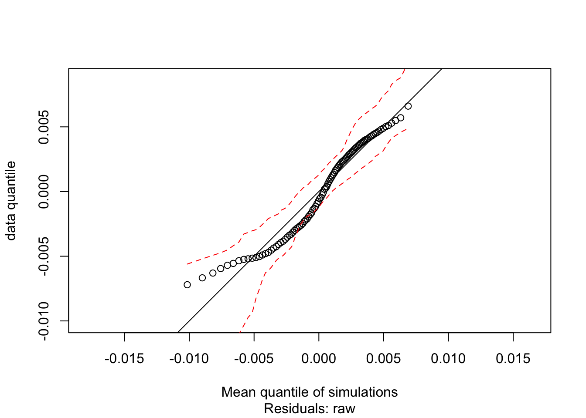
Note that the plot() method applied to an S4 spatial object plots the geometries without the attributes.
Another example: Consider the ESRI shapefile containing police expenditure data from Mississippi. The data are on my Web site and are downloaded and imported as follows.
download.file("http://myweb.fsu.edu/jelsner/temp/data/police.zip",
"police.zip")
unzip("police.zip")
sfdf <- st_read(dsn = "police")## Reading layer `police' from data source `/Users/jelsner/Desktop/Projects/ASSFG-Book/police' using driver `ESRI Shapefile'
## Simple feature collection with 82 features and 21 fields
## geometry type: POLYGON
## dimension: XY
## bbox: xmin: -91.64356 ymin: 30.19474 xmax: -88.09043 ymax: 35.00496
## CRS: NACreate an S4 spatial object from the simple feature object.
Note that the proj4string is specified as NA (missing). We know these data have a geographic CRS so we assign it as follows.
The plot() method plots the polygons. First using the native geographic coordinates then using projected coordinates. We set up the side-by-side plots using the par() function.
par(mfrow = c(1, 2))
plot(spdf)
spdfP <- spTransform(spdf,
CRS = CRS("+proj=lcc +lat_1=60 +lat_2=30 +lon_0=-80 +units=km"))
plot(spdfP)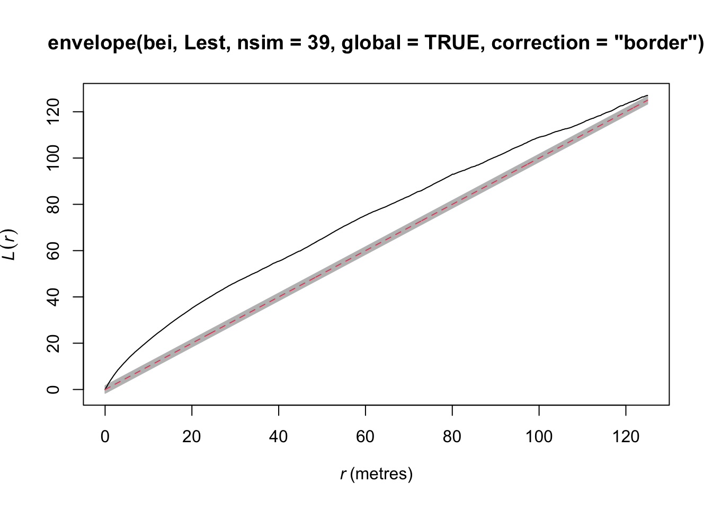
Note: Here the projection is a Lambert conformal conic with secant latitudes at 30 and 60N and centered at 80W longitude.
By including the byid = TRUE argument in the gEnvelope() function, we create a spatial polygon object with 82 rectangles.
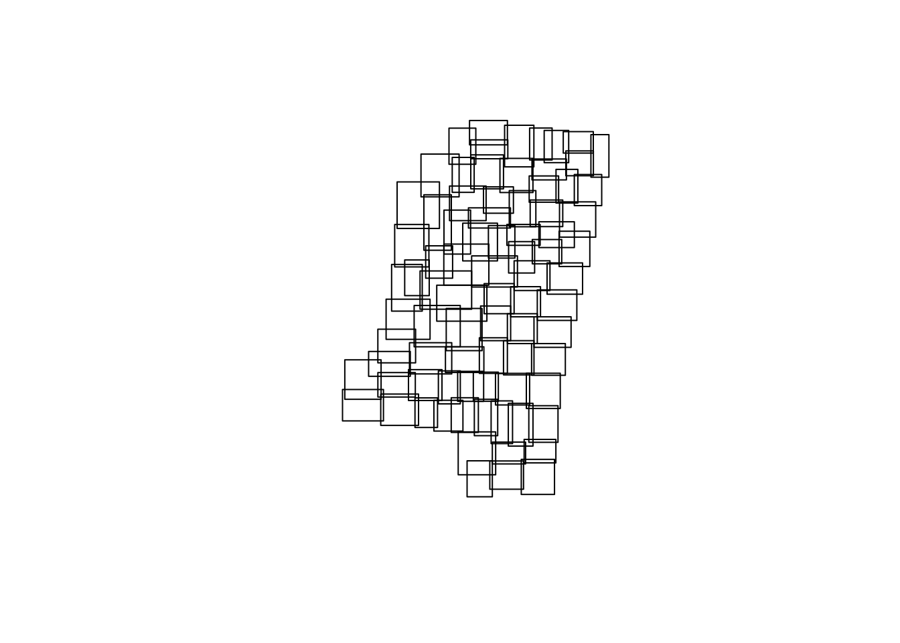
The gCentroid() function computes the geometric center of the spatial object and returns a S4 spatial object of class SpatialPoints.
## [1] "SpatialPoints"
## attr(,"package")
## [1] "sp"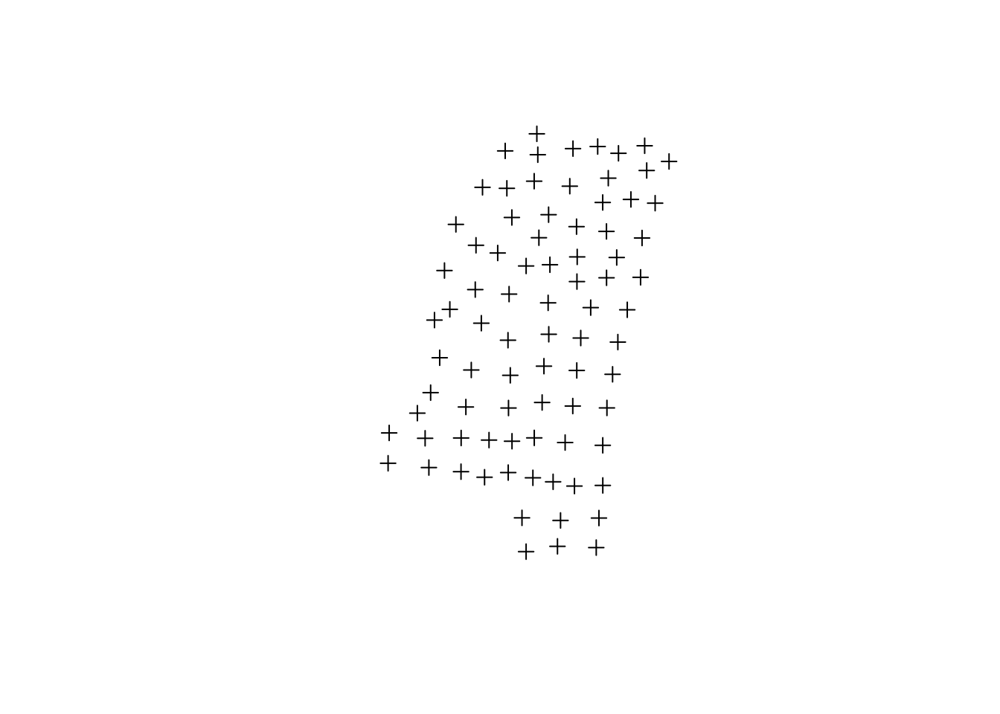
The function gArea() returns the geographical area (in square kilometers) of the geometries.
## Named num [1:82] 1022 1091 1137 1027 1247 ...
## - attr(*, "names")= chr [1:82] "1" "2" "3" "4" ...The output here is a numeric vector of length 82 listing the area of each county (in square kilometers).
Q: How would you determine the area of the entire state?
The gContains() function tests whether one geometry contains or is contained within another geometry. For example, which county contains the geographic center of the state? First determine the center with the gCentroid() function then determine which county contains it using the gContain() function.
## 1 2 3 4 5 6 7 8 9 10 11 12 13
## 1 FALSE FALSE FALSE FALSE FALSE FALSE FALSE FALSE FALSE FALSE FALSE FALSE FALSE
## 14 15 16 17 18 19 20 21 22 23 24 25 26
## 1 FALSE FALSE FALSE FALSE FALSE FALSE FALSE FALSE FALSE FALSE FALSE FALSE FALSE
## 27 28 29 30 31 32 33 34 35 36 37 38 39
## 1 FALSE FALSE FALSE FALSE FALSE FALSE FALSE FALSE FALSE FALSE FALSE FALSE FALSE
## 40 41 42 43 44 45 46 47 48 49 50 51 52
## 1 FALSE FALSE FALSE FALSE TRUE FALSE FALSE FALSE FALSE FALSE FALSE FALSE FALSE
## 53 54 55 56 57 58 59 60 61 62 63 64 65
## 1 FALSE FALSE FALSE FALSE FALSE FALSE FALSE FALSE FALSE FALSE FALSE FALSE FALSE
## 66 67 68 69 70 71 72 73 74 75 76 77 78
## 1 FALSE FALSE FALSE FALSE FALSE FALSE FALSE FALSE FALSE FALSE FALSE FALSE FALSE
## 79 80 81 82
## 1 FALSE FALSE FALSE FALSEThe result is a matrix containing all values equal to FALSE except for the county containing the geographic center.
To see this we use the plot() method. First the county boundaries then the center point as a red cross.
Suppose we want to subset the center county making it it’s own SpatialPolygonsDataFrame. We first turn the matrix object countyCenter into a vector then use the [] operator on spdfP.
centerCounty <- spdfP[as.vector(countyCenter), ]
plot(spdfP)
plot(centerCounty,
col = "red",
add = TRUE)The gBuffer() function expands the given geometry to include the area within the specified width with specific styling options. Here we create a buffer around the state at a distance of 100 km.
The output from gBuffer() is a SpatialPolyons object.
There are many more functions for geocomputation on S4 spatial data frames. The reference manual is available here https://cran.r-project.org/web/packages/rgeos/rgeos.pdf
3.1.2 A few notes about coordinate reference systems
CRS provide a standardized way of describing locations. Many different CRS are used to describe geographic data. The CRS that is chosen depends on when the data was collected, the geographic extent of the data, the purpose of the data, etc.
When data with different CRS are combined it is important to transform them to a common CRS so they align with one another. This is similar to making sure that units are the same when measuring volume or distances.
In S4 spatial objects, CRS information is available in the proj4string slot.
## [1] "+proj=longlat +datum=WGS84 +no_defs +ellps=WGS84 +towgs84=0,0,0"Information is given as a character string that includes the projection (here +proj=longlat), the datum (here +datum=WGS84 +towgs84=0,0,0), and the ellipsoid (here +ellps=WGS84). The syntax uses the PROJ standard. Various options are listed with the projInfo() function from the rgdal package.
## rgdal: version: 1.4-8, (SVN revision 845)
## Geospatial Data Abstraction Library extensions to R successfully loaded
## Loaded GDAL runtime: GDAL 2.4.2, released 2019/06/28
## Path to GDAL shared files: /Library/Frameworks/R.framework/Versions/4.0/Resources/library/rgdal/gdal
## GDAL binary built with GEOS: FALSE
## Loaded PROJ.4 runtime: Rel. 5.2.0, September 15th, 2018, [PJ_VERSION: 520]
## Path to PROJ.4 shared files: /Library/Frameworks/R.framework/Versions/4.0/Resources/library/rgdal/proj
## Linking to sp version: 1.4-1## name description
## 1 aea Albers Equal Area
## 2 aeqd Azimuthal Equidistant
## 3 airy Airy
## 4 aitoff Aitoff
## 5 alsk Mod. Stereographic of Alaska
## 6 apian Apian Globular I## name ellipse
## 1 WGS84 WGS84
## 2 GGRS87 GRS80
## 3 NAD83 GRS80
## 4 NAD27 clrk66
## 5 potsdam bessel
## 6 carthage clrk80ign
## 7 hermannskogel bessel
## 8 ire65 mod_airy
## 9 nzgd49 intl
## 10 OSGB36 airy
## definition
## 1 towgs84=0,0,0
## 2 towgs84=-199.87,74.79,246.62
## 3 towgs84=0,0,0
## 4 nadgrids=@conus,@alaska,@ntv2_0.gsb,@ntv1_can.dat
## 5 nadgrids=@BETA2007.gsb
## 6 towgs84=-263.0,6.0,431.0
## 7 towgs84=577.326,90.129,463.919,5.137,1.474,5.297,2.4232
## 8 towgs84=482.530,-130.596,564.557,-1.042,-0.214,-0.631,8.15
## 9 towgs84=59.47,-5.04,187.44,0.47,-0.1,1.024,-4.5993
## 10 towgs84=446.448,-125.157,542.060,0.1502,0.2470,0.8421,-20.4894
## description
## 1
## 2 Greek_Geodetic_Reference_System_1987
## 3 North_American_Datum_1983
## 4 North_American_Datum_1927
## 5 Potsdam Rauenberg 1950 DHDN
## 6 Carthage 1934 Tunisia
## 7 Hermannskogel
## 8 Ireland 1965
## 9 New Zealand Geodetic Datum 1949
## 10 Airy 1830## name major ell description
## 1 MERIT a=6378137.0 rf=298.257 MERIT 1983
## 2 SGS85 a=6378136.0 rf=298.257 Soviet Geodetic System 85
## 3 GRS80 a=6378137.0 rf=298.257222101 GRS 1980(IUGG, 1980)
## 4 IAU76 a=6378140.0 rf=298.257 IAU 1976
## 5 airy a=6377563.396 b=6356256.910 Airy 1830
## 6 APL4.9 a=6378137.0. rf=298.25 Appl. Physics. 1965The ellipsoid describes the shape of the Earth and the datum provides the information needed to anchor the abstract coordinates to the Earth. The datum defines an origin point of the coordinate axes and defines the direction of the axes.
The datum always specifies the ellipsoid, but the ellipsoid does not specify the datum. Datums are based on specific ellipsoids and sometimes have the same name as the ellipsoid.
A CRS can be referenced by its EPSG code (e.g., epsg:4121). The EPSG is a structured dataset of CRSs originally compiled by the European Petroleum Survey Group (EPSG). Details of a particular EPSG code is obtained by
## CRS arguments:
## +init=epsg:4326 +proj=longlat +datum=WGS84 +no_defs +ellps=WGS84
## +towgs84=0,0,0EPSG codes for commonly used CRSs include:
Geographic
WGS84 (EPSG:4326) Used by organizations that provide GIS data for the entire globe. Used by Google Earth.
NAD83 (EPSG:4269) Used by U.S. federal agencies.
Projected
Mercator (EPSG:3857) Mercator, tiles from Google Maps, Open Street Maps, Stamen Maps
UTM, Zone 10 (EPSG:32610) Pacific Northwest
When readOGR() and st_read() are used to load spatial data, the CRS information is included as part of the spatial object.
## [1] "+proj=longlat +datum=WGS84 +no_defs +ellps=WGS84 +towgs84=0,0,0"## [1] NATo assign a known CRS to a S4 spatial object x type either:
CAUTION: Assigning a CRS does not re-project the geometry. Also, this is only for S4 spatial data. To transform from one CRS to another use the spTransform function from the rgdal package. For example, type either:
Here z is a spatial data with a valid CRS.
An overview of CRSs is available here https://www.nceas.ucsb.edu/~frazier/RSpatialGuides/OverviewCoordinateReferenceSystems.pdf
Note: NOAA’s National Geodetic Survey is currently working on the modernization of the National Spatial Reference System (NSRS), which will replace the North American Datum of 1983 (NAD83) and the North American Vertical Datum of 1988 (NAVD88) with a new geometric reference frame and geopotential datum in 2022.
Dennis Riordan, the NGS representative for the Gulf coast, has agreed to give a presentation on this change to our class on February 11th. I will open it up to other students and faculty.
3.1.3 Creating an S4 object
Most of the time there is no need to create a spatial data frame since it will be imported as such. However it’s helpful to understand how spatial data are constructed and stored.
For example, here we import a data frame the contains information on the location of the CRAN sites in 2007.
df <- read.table(file = "http://myweb.fsu.edu/jelsner/temp/data/CRAN051001a.txt",
header = TRUE)
head(df)## place north east loc long lat
## 1 Brisbane 27d28'S 153d02'E Australia 153.03333 -27.46667
## 2 Melbourne 37d49'S 144d58'E Australia 144.96667 -37.81667
## 3 Wien 48d13'N 16d20'E Austria 16.33333 48.21667
## 4 Curitiba 25d25'S 49d16'W Brazil -49.26667 -25.41667
## 5 Vioza 20d45'S 42d52'W Brazil -42.86667 -20.75000
## 6 Rio de Janeiro 22d54'S 43d12'W Brazil -43.20000 -22.90000Note here I use the read.table() function from base R. It is very similar to the read_table() function from the readr package but the default requires you to specify whether the first row of the file contains column names (header = TRUE).
Each row is a location. The location includes the name of the location and spatial coordinates.
Here we create a spatial points data frame using the coordinates() function (from the sp package). We first assign to the object spdf the original data frame. We then specify what columns in spdf we want as the coordinates. Here use the columns labeled long and lat.
Note: Unlike most functions, the coordinates() is on the left side of the assignment operator.
## class : SpatialPointsDataFrame
## features : 6
## extent : -49.26667, 153.0333, -37.81667, 48.21667 (xmin, xmax, ymin, ymax)
## crs : NA
## variables : 4
## names : place, north, east, loc
## min values : Brisbane, 20d45'S, 144d58'E, Australia
## max values : Wien, 48d13'N, 49d16'W, Brazil## place north east loc
## 1 Brisbane 27d28'S 153d02'E Australia
## 2 Melbourne 37d49'S 144d58'E Australia
## 3 Wien 48d13'N 16d20'E Austria
## 4 Curitiba 25d25'S 49d16'W Brazil
## 5 Vioza 20d45'S 42d52'W Brazil
## 6 Rio de Janeiro 22d54'S 43d12'W BrazilThe columns long and lat are moved to the coords slot of the now spatial points data frame.
## long lat
## [1,] 153.03333 -27.46667
## [2,] 144.96667 -37.81667
## [3,] 16.33333 48.21667
## [4,] -49.26667 -25.41667
## [5,] -42.86667 -20.75000
## [6,] -43.20000 -22.90000The proj4string slot is coded as NA indicating that there is no coordinate reference system (CRS). We see that with the proj4string() function or with spdf@proj4string.
## [1] NA## CRS arguments: NASince the coordinates are longitude and latitude we assign a geographic CRS. We do that by first using the CRS() function and specifying a PROJ character string. We then assign this to the spatial points data frame with the proj4string() function.
## [1] "+proj=longlat +ellps=WGS84"We can speak of a geographic CRS (model for shape of the earth plus lat/lon) or a projected CRS (model for shape of Earth plus a specific geometric model for projecting to a flat surface).
## [1] FALSEOnce the data has a CRS, it can be re-projected using the spTransform() function in the rgdal package.
3.1.4 The spplot() method
The easiest way to make a thematic map with an S4 spatial data frame is with the spplot() method. The first argument in the spplot() function is the spatial data frame object and the second argument specifies what column to use to fill or color.
For example, returning to the police expenditure spatial polygons data frame (spdfP) we create a map of police expenditures by county. The expendures are in the column labeled POLICE so we specify this column name with the argument zcol = "POLICE".
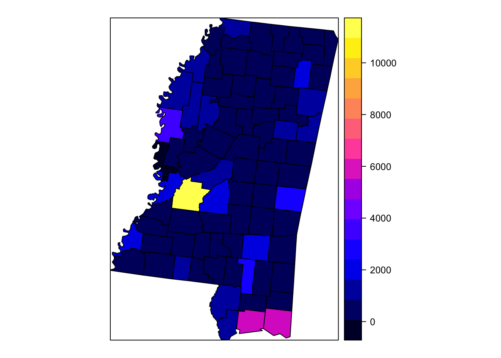
The result is a choropleth map indicating police expenditures with a default color ramp from dark blue (indicating low expenditure) to yellow (indicating high expenditure).
While easy to apply the default settings on this method fail to produce a good map. We can improve things but it requires some trial-and-error.
For example, to improve the color ramp. We first specify a range of values using the seq() function then a set of 6 colors using the brewer.pal() function from the RColorBrewer package. We determine the range with the range() function.
We specify the color palette to be 6 shades of green. We then add the arguments col.regions = and at = in the spplot() function call.
## [1] 49 10971rng <- seq(0, 12000, 2000)
cls <- brewer.pal(6, "Greens")
spplot(spdfP,
zcol = "POLICE",
col.regions = cls,
at = rng)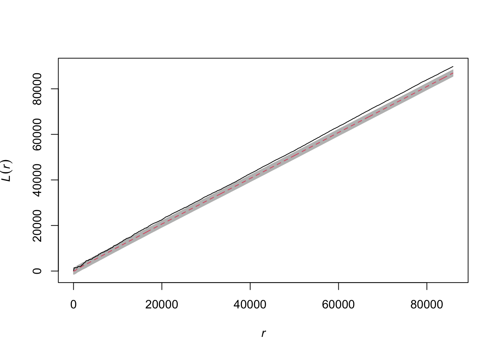
Better.
We reuse this code making small modifications to create a thematic map showing percentage of the population that is unemployed.
## [1] 4 17rng <- seq(4, 18, 2)
cls <- brewer.pal(7, "Blues")
spplot(spdfP,
zcol = "UNEMP",
col.regions = cls,
at = rng,
colorkey = list(space = "bottom"),
sub = "Unemployment (%)")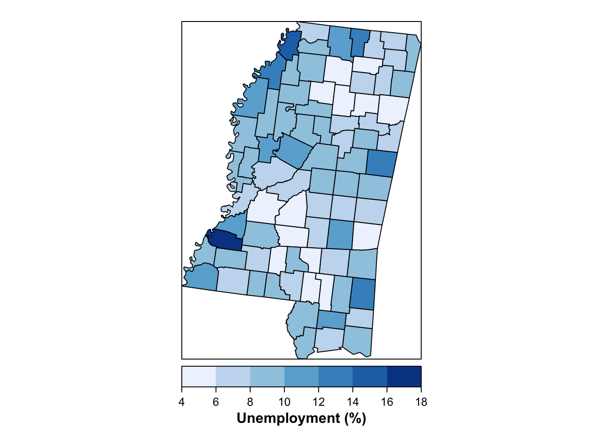
Note that the color key is blaced on the bottom.
We add a north arrow by first determining the bounding box of the plot and then creating a list that specifies the scale and location of the arrow. This list gets passed to the spplot() function through the sp.layout = argument. Here we start by reprojecting the spatial data frame.
spdfP <- spTransform(spdfP,
CRS = CRS("+proj=lcc +lat_1=60 +lat_2=30 +lon_0=-90 +units=km"))
bbox(spdfP)## min max
## x -155.6854 171.4047
## y 3714.4452 4244.1786l1 <- list("SpatialPolygonsRescale",
layout.north.arrow(),
offset = c(-125, 4200),
scale = 40)
spplot(spdfP,
zcol = "UNEMP",
col.regions = cls,
at = rng,
sp.layout = list(l1),
colorkey = list(space = "bottom"),
sub = "Unemployment (%)")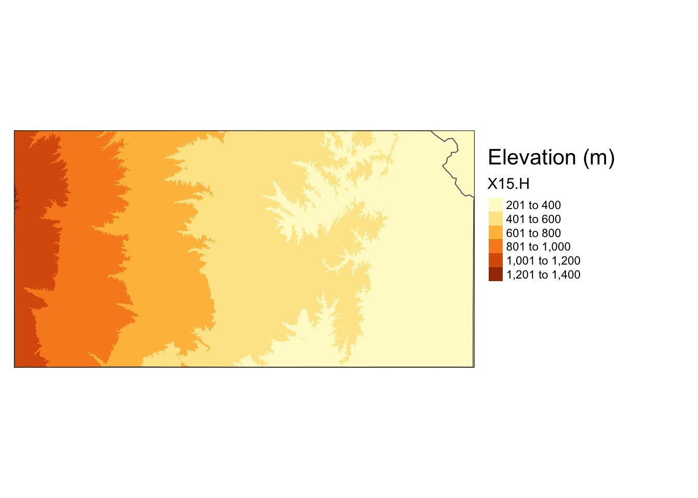
Similarly, we add a scale bar.
l3 <- list("SpatialPolygonsRescale",
layout.scale.bar(),
offset = c(-125, 3734),
scale = 50, fill = c("transparent","black"))
l4 <- list("sp.text", c(-125, 3724), "0")
l5 <- list("sp.text", c(-75, 3724), "50 km")
spplot(spdfP,
zcol = "UNEMP",
col.regions = cls,
at = rng,
sp.layout = list(l1, l3, l4, l5),
colorkey = list(space = "bottom"),
sub = "Unemployment (%)")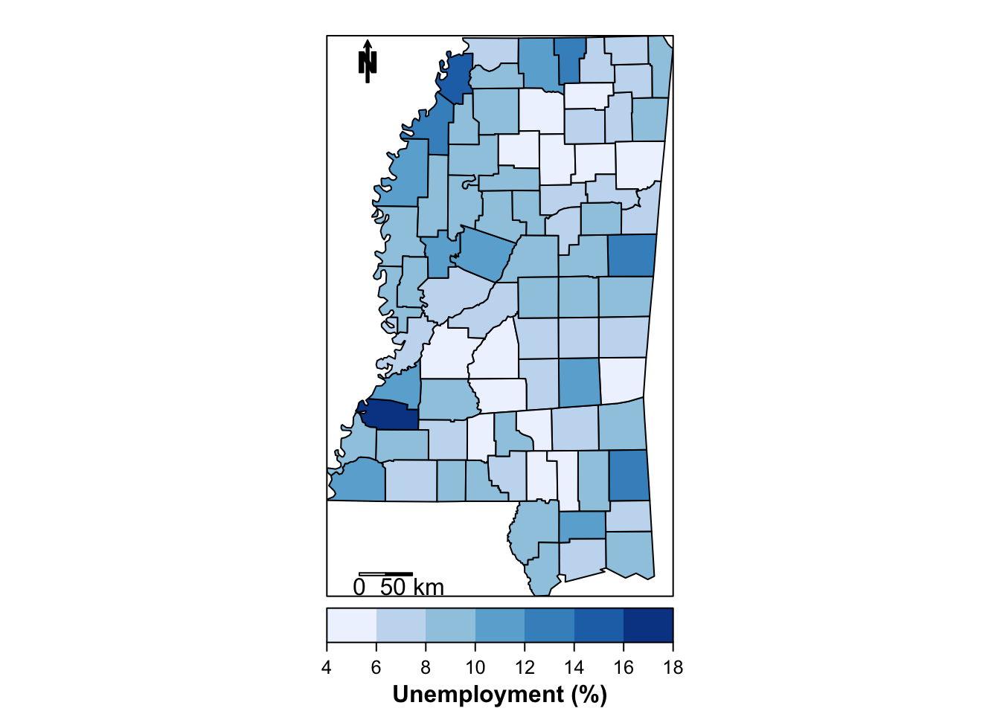
This takes a lot of trial and error.
3.2 Simple Features
Simple features is a standard from the Open (as in ‘open source’) Geospatial Consortium (OGC) to represent geographic information. It simplifies working with geographic data by condensing geographic forms into a single geometry class.
The standard is implemented in spatial databases (e.g., PostGIS), commercial GIS (e.g., ESRI) and forms the vector data basis for libraries such as GDAL. A subset of simple features forms the GeoJSON standard.
The sf package (Pebesma 2017) supports these classes and includes plotting and other methods.
Functions in the sf package can represent all of the common vector geometry types: points, lines, polygons and their respective ‘multi’ versions (which group together features of the same type into a single feature). The functions in the sf also support geometry collections, which can contain multiple geometry types in a single object. But the raster data classes are not supported.
The sf package incorporates the three main packages of the spatial R ecosystem: sp (Pebesma and Bivand 2017) for the class system, rgdal (Bivand, Keitt, and Rowlingson 2017) for reading and writing data, and rgeos (Bivand and Rundel 2017) for spatial operations done with GEOS.
Simple features are data frames with a spatial column. The spatial column is usually called geometry (or geom). The geometry column is referenced like a regular column. For example, world$geom refers to the spatial column of the world simple feature data frame.
The difference is that the geometry column is a ‘list column’ of class sfc (simple feature column). The sfc is composed of objects of class sfg (simple feature geometries).

Simple Feature Anatomy
Here we see:
- in green a simple feature: a single record, or
data.framerow, consisting of attributes and geometry - in blue a single simple feature geometry (an object of class
sfg) - in red a simple feature list-column (an object of class
sfc, which is a column in thedata.frame) - the geometries are represented as well-known text (WKT)
Geometries are the building blocks of simple features. Well-known binary (WKB) and well-known text (WKT) are the way simple feature geometries are coded. WKB representations are hexadecimal strings readable by computers. This is why GIS and spatial databases use WKB to transfer and store geometry objects. WKT is a human-readable text description of simple features. The two formats are exchangeable.
A point is a coordinate in 2D, 3D or 4D space (see vignette("sf1") for more information) such as:
POINT (5 2)
The first number is the x coordinate and the second number is the y coordinate.
A linestring is a sequence of points with a straight line connecting the points, for example:
LINESTRING (1 5, 4 4, 4 1, 2 2, 3 2)
Each pair of x and y coordinates is separated by a comma.
A polygon is a sequence of points that form a closed, non-intersecting ring. Closed means that the first and the last point of a polygon have the same coordinates. A polygon has one exterior boundary (outer ring) but it can have interior boundaries (inner rings). An inner ring is called a ‘hole’.
- Polygon without a hole -
POLYGON ((1 5, 2 2, 4 1, 4 4, 1 5))
Here there are two parentheses to start and two to end the string of coordinates.
- Polygon with one hole -
POLYGON ((1 5, 2 2, 4 1, 4 4, 1 5), (2 4, 3 4, 3 3, 2 3, 2 4))
Here the first set of coordinates defines the outer edge of the polygon and the next set of coordinates defines the hole. The outer edge vertexes are connected in a counterclockwise direction. The inner edge vertexes (defining the hole in the polygon) are connected in a clockwise direction.
Simple features allow multiple geometries (hence the term ‘geometry collection’) using ‘multi’ version of each geometry type:
- Multipoint -
MULTIPOINT (5 2, 1 3, 3 4, 3 2) - Multistring -
MULTILINESTRING ((1 5, 4 4, 4 1, 2 2, 3 2), (1 2, 2 4)) - Multipolygon -
MULTIPOLYGON (((1 5, 2 2, 4 1, 4 4, 1 5), (0 2, 1 2, 1 3, 0 3, 0 2)))
Q: What is the syntatical difference between a polygon with a hole and a multipolygon?
A collection of these is made:
- Geometry collection -
GEOMETRYCOLLECTION (MULTIPOINT (5 2, 1 3, 3 4, 3 2), LINESTRING (1 5, 4 4, 4 1, 2 2, 3 2)))
3.2.1 Simple feature geometry (sfg)
The sfg class represents the simple feature geometry types: point, linestring, polygon (and their ‘multi’ equivalents, such as multipoints) or geometry collection.
Usually we don’t need to create geometries when we import our data. However, there are a set of functions to create simple feature geometry objects (sfg) from scratch if needed. The names of these functions are simple and consistent, as they all start with the st_ prefix and end with the name of the geometry type in lowercase letters:
- A point -
st_point() - A linestring -
st_linestring() - A polygon -
st_polygon() - A multipoint -
st_multipoint() - A multilinestring -
st_multilinestring() - A multipolygon -
st_multipolygon() - A geometry collection -
st_geometrycollection()
An sfg object can be created from three data types:
- A numeric vector - a single point
- A matrix - a set of points, where each row contains a point - a multipoint or linestring
- A list - any other set, e.g. a multilinestring or geometry collection
To create point objects, we use the st_point() function in conjunction with a numeric vector:
## POINT (5 2)## POINT Z (5 2 3)To create multipoint objects, we use matrices:
## [,1] [,2]
## [1,] 5 2
## [2,] 1 3
## [3,] 3 4
## [4,] 3 2## MULTIPOINT ((5 2), (1 3), (3 4), (3 2))## LINESTRING (1 5, 4 4, 4 1, 2 2, 3 2)To create a polygon, we use lists.
## POLYGON
poly.list <- list(rbind(c(1, 5), c(2, 2), c(4, 1), c(4, 4), c(1, 5)))
st_polygon(poly.list)## POLYGON ((1 5, 2 2, 4 1, 4 4, 1 5))## POLYGON with a hole
poly.border <- rbind(c(1, 5), c(2, 2), c(4, 1), c(4, 4), c(1, 5))
poly.hole <- rbind(c(2, 4), c(3, 4), c(3, 3), c(2, 3), c(2, 4))
poly.with.hole.list <- list(poly.border, poly.hole)
st_polygon(poly.with.hole.list)## POLYGON ((1 5, 2 2, 4 1, 4 4, 1 5), (2 4, 3 4, 3 3, 2 3, 2 4))3.2.2 Simple feature geometry column
One sfg object contains a single simple feature geometry. A simple feature geometry column (sfc) is a list of sfg objects together with information about the coordinate reference system.
For example, to combine two simple features into one object with two features, we use the st_sfc() function. This is important since sfg represents the geometry column in sf data frames.
## Geometry set for 2 features
## geometry type: POINT
## dimension: XY
## bbox: xmin: 1 ymin: 2 xmax: 5 ymax: 3
## CRS: NA## POINT (5 2)## POINT (1 3)In most cases, a sfc object contains objects of the same geometry type. Thus, when we convert sfg objects of type polygon into a simple feature geometry column, we also end up with an sfc object of type polygon. Equally, a geometry column of multiple line strings would result in an sfc object of type multilinestring.
An example with polygons.
poly.list1 <- list(rbind(c(1, 5), c(2, 2), c(4, 1), c(4, 4), c(1, 5)))
polygon1 <- st_polygon(poly.list)
poly.list2 <- list(rbind(c(0, 2), c(1, 2), c(1, 3), c(0, 3), c(0, 2)))
polygon2 <- st_polygon(poly.list2)
st_sfc(polygon1, polygon2)## Geometry set for 2 features
## geometry type: POLYGON
## dimension: XY
## bbox: xmin: 0 ymin: 1 xmax: 4 ymax: 5
## CRS: NA## POLYGON ((1 5, 2 2, 4 1, 4 4, 1 5))## POLYGON ((0 2, 1 2, 1 3, 0 3, 0 2))An example with line strings.
mls.list1 <- list(rbind(c(1, 5), c(4, 4), c(4, 1), c(2, 2), c(3, 2)),
rbind(c(1, 2), c(2, 4)))
mls1 <- st_multilinestring((mls.list1))
mls.list2 <- list(rbind(c(2, 9), c(7, 9), c(5, 6), c(4, 7), c(2, 7)),
rbind(c(1, 7), c(3, 8)))
mls2 <- st_multilinestring((mls.list2))
st_sfc(mls1, mls2)## Geometry set for 2 features
## geometry type: MULTILINESTRING
## dimension: XY
## bbox: xmin: 1 ymin: 1 xmax: 7 ymax: 9
## CRS: NA## MULTILINESTRING ((1 5, 4 4, 4 1, 2 2, 3 2), (1 ...## MULTILINESTRING ((2 9, 7 9, 5 6, 4 7, 2 7), (1 ...An example with a geometry collection.
## Geometry set for 2 features
## geometry type: GEOMETRY
## dimension: XY
## bbox: xmin: 1 ymin: 1 xmax: 5 ymax: 5
## CRS: NA## POINT (5 2)## MULTILINESTRING ((1 5, 4 4, 4 1, 2 2, 3 2), (1 ...A sfc object stores information on the coordinate reference systems (CRS). To specify a certain CRS, we can use the epsg (SRID) or proj4string attributes. The default value of epsg (SRID) and proj4string is NA (Not Available).
## Geometry set for 2 features
## geometry type: POINT
## dimension: XY
## bbox: xmin: 1 ymin: 2 xmax: 5 ymax: 3
## CRS: NA## POINT (5 2)## POINT (1 3)All geometries in an sfc object must have the same CRS.
We add coordinate reference system as a crs = argument in st_sfc(). The argument accepts either an integer with the epsg code (for example, 4326).
## Geometry set for 2 features
## geometry type: POINT
## dimension: XY
## bbox: xmin: 1 ymin: 2 xmax: 5 ymax: 3
## CRS: EPSG:4326## POINT (5 2)## POINT (1 3)Or a proj4string character string (for example, "+proj=longlat +datum=WGS84 +no_defs").
## Geometry set for 2 features
## geometry type: POINT
## dimension: XY
## bbox: xmin: 1 ymin: 2 xmax: 5 ymax: 3
## CRS: +proj=longlat +datum=WGS84 +no_defs## POINT (5 2)## POINT (1 3)For example, we can set the UTM (Universal Transverse Mercator) Zone 11N projection with epsg code 2955.
## Geometry set for 2 features
## geometry type: POINT
## dimension: XY
## bbox: xmin: 1 ymin: 2 xmax: 5 ymax: 3
## CRS: EPSG:2955## POINT (5 2)## POINT (1 3)The proj4string definition is automatically added. Now we set the CRS using proj4string:
st_sfc(point1, point2,
crs = "+proj=utm +zone=11 +ellps=GRS80 +towgs84=0,0,0,0,0,0,0 +units=m +no_defs")## Geometry set for 2 features
## geometry type: POINT
## dimension: XY
## bbox: xmin: 1 ymin: 2 xmax: 5 ymax: 3
## CRS: +proj=utm +zone=11 +ellps=GRS80 +towgs84=0,0,0,0,0,0,0 +units=m +no_defs## POINT (5 2)## POINT (1 3)In this case the epsg string remains empty demonstrating there is no general method to convert from proj4string to epsg.
3.2.3 Simple feature objects
Features (geometries) often come with associated attributes. The attributes might represent the name of the geometry, measured values, groups to which the geometry belongs, etc.
For example, we measure a temperature of 10C at FSU on January 23, 2020. Thus, we have a specific point in space (the coordinates), the name of the location (FSU), a temperature value and the date of the measurement. Other attributes might include a urbanity category (campus or city), or a remark if the measurement was made with an automatic station.
The simple feature class, sf, is a combination of an attribute table (data.frame) and a simple feature geometry column (sfc). Simple features are created using the st_sf() function.
# sfg objects
FSU.point <- st_point(c(-84.29849, 30.44188))
TLH.point <- st_point(c(-84.34505, 30.39541))
# sfc object
our.geometry <- st_sfc(FSU.point, TLH.point,
crs = 4326)
# data.frame object
our.attributes <- data.frame(name = c("FSU", "Airport"),
temperature = c(10, 5),
date = c(as.Date("2020-01-23"), as.Date("2020-01-23")),
category = c("campus", "airport"),
automatic = c(TRUE, FALSE))
# sf object
sf.points <- st_sf(our.attributes,
geometry = our.geometry)The example illustrates the components of sf objects. First, coordinates define the geometry of the simple feature geometry (sfg). Second, we can combine the geometries into a simple feature geometry column (sfc) which also stores the CRS. Third, we store the attribute information on the geometries in a data.frame. Fourth, the st_sf() function combines the attribute table and the sfc object in an sf object.
## Simple feature collection with 2 features and 5 fields
## geometry type: POINT
## dimension: XY
## bbox: xmin: -84.34505 ymin: 30.39541 xmax: -84.29849 ymax: 30.44188
## CRS: EPSG:4326
## name temperature date category automatic geometry
## 1 FSU 10 2020-01-23 campus TRUE POINT (-84.29849 30.44188)
## 2 Airport 5 2020-01-23 airport FALSE POINT (-84.34505 30.39541)## [1] "sf" "data.frame"Simple features have two classes, sf and data.frame. Simple features are data frames (square tables), but with spatial attributes (usually stored in a special geom list-column in the data frame).
This duality is central to the concept of simple features: most of the time a sf can be treated as, and behaves like, a data.frame. Simple features are, in essence, data frames with a spatial extension.
I refer to simple feature objects redundantly as ‘simple feature data frames’ to distinguish them from S4 class spatial data frames.
We create a data.frame with a geometry list-column but that is not of class sf using the as.data.frame() function.
## [1] "data.frame"In this case the geometry column is
- no longer a
sfc. - no longer has a plot method, and
- lacks all dedicated methods listed above for class
sf
3.2.4 Your turn
- Create a simple feature data frame from the following information about the Joplin tornado that killed 158 people on May 22, 2011. Hint: use
st_linestring()andrbind().
Start longitude = -94.5932 Start latitude = 37.0524 End longitude = -94.2213 End latitude = 36.9838 crs = geographic number of fatalities = 158
- The object
us_statesfrom the spData package is a simple feature data frame from the U.S. Census Bureau. The variables include the name, region, area, and population.
A. Create a new data frame containing only the population information. (10)
## Simple feature collection with 6 features and 2 fields
## geometry type: MULTIPOLYGON
## dimension: XY
## bbox: xmin: -114.8136 ymin: 24.55868 xmax: -71.78699 ymax: 42.04964
## CRS: EPSG:4269
## total_pop_10 total_pop_15 geometry
## 1 4712651 4830620 MULTIPOLYGON (((-88.20006 3...
## 2 6246816 6641928 MULTIPOLYGON (((-114.7196 3...
## 3 4887061 5278906 MULTIPOLYGON (((-109.0501 4...
## 4 3545837 3593222 MULTIPOLYGON (((-73.48731 4...
## 5 18511620 19645772 MULTIPOLYGON (((-81.81169 2...
## 6 9468815 10006693 MULTIPOLYGON (((-85.60516 3...B. Create a new data frame containing only states from the South region. (10)
## Simple feature collection with 6 features and 6 fields
## geometry type: MULTIPOLYGON
## dimension: XY
## bbox: xmin: -103.0024 ymin: 24.55868 xmax: -78.54109 ymax: 37.0001
## CRS: EPSG:4269
## GEOID NAME REGION AREA total_pop_10 total_pop_15
## 1 01 Alabama South 133709.27 [km^2] 4712651 4830620
## 2 12 Florida South 151052.01 [km^2] 18511620 19645772
## 3 13 Georgia South 152725.21 [km^2] 9468815 10006693
## 4 22 Louisiana South 122345.76 [km^2] 4429940 4625253
## 5 40 Oklahoma South 180971.40 [km^2] 3675339 3849733
## 6 45 South Carolina South 80903.58 [km^2] 4511428 4777576
## geometry
## 1 MULTIPOLYGON (((-88.20006 3...
## 2 MULTIPOLYGON (((-81.81169 2...
## 3 MULTIPOLYGON (((-85.60516 3...
## 4 MULTIPOLYGON (((-92.01783 2...
## 5 MULTIPOLYGON (((-103.0022 3...
## 6 MULTIPOLYGON (((-83.10861 3...C. Create a new data frame containing only states from the West region having area less then 250,000 square km and a 2015 population more than 5,000,000 residents. Hint: you will need to use as.numeric(AREA) to remove the units. (10)
df3 <- us_states %>%
mutate(AREA = as.numeric(AREA)) %>%
filter(REGION == "West") %>%
filter(AREA > 250000 & total_pop_15 > 5000000)
head(df3)## Simple feature collection with 3 features and 6 fields
## geometry type: MULTIPOLYGON
## dimension: XY
## bbox: xmin: -124.4096 ymin: 31.33224 xmax: -102.0422 ymax: 42.00952
## CRS: EPSG:4269
## GEOID NAME REGION AREA total_pop_10 total_pop_15
## 1 04 Arizona West 295281.3 6246816 6641928
## 2 08 Colorado West 269573.1 4887061 5278906
## 3 06 California West 409747.1 36637290 38421464
## geometry
## 1 MULTIPOLYGON (((-114.7196 3...
## 2 MULTIPOLYGON (((-109.0501 4...
## 3 MULTIPOLYGON (((-118.6034 3...D. What was the total population of the Midwest region in 2010 and 2015? (20)
us_states %>%
filter(REGION == "Midwest") %>%
summarize(TotalPop2010 = sum(total_pop_10),
TotalPop2015 = sum(total_pop_15))## Simple feature collection with 1 feature and 2 fields
## geometry type: MULTIPOLYGON
## dimension: XY
## bbox: xmin: -104.0577 ymin: 35.99568 xmax: -80.51869 ymax: 49.38436
## CRS: EPSG:4269
## TotalPop2010 TotalPop2015 geometry
## 1 66514091 67546398 MULTIPOLYGON (((-89.2552 47...E. How many states are in each region? (20)
## Simple feature collection with 4 features and 2 fields
## geometry type: MULTIPOLYGON
## dimension: XY
## bbox: xmin: -124.7042 ymin: 24.55868 xmax: -66.9824 ymax: 49.38436
## CRS: EPSG:4269
## # A tibble: 4 x 3
## REGION nS geometry
## <fct> <int> <MULTIPOLYGON [°]>
## 1 Norteast 9 (((-68.9446 44.11284, -68.82507 44.18634, -68.77029 44.06957, …
## 2 Midwest 12 (((-89.2552 47.8761, -89.17915 47.93503, -88.83571 48.05675, -…
## 3 South 17 (((-81.81169 24.56874, -81.74565 24.65988, -81.44351 24.81336,…
## 4 West 11 (((-118.6055 33.031, -118.37 32.83927, -118.4963 32.85157, -11…F. Make a bar chart showing the total area in millions of square kilometers by region. Hint: include stat = "identity" in the geom_bar() function. (30)
library(ggplot2)
us_states %>%
group_by(REGION) %>%
mutate(AREA = as.numeric(AREA)/10^6) %>%
summarize(totalArea = sum(AREA)) %>%
ggplot(aes(y = totalArea, x = REGION)) +
geom_bar(stat = "identity") +
ylab("Total Area (millions sq. km)")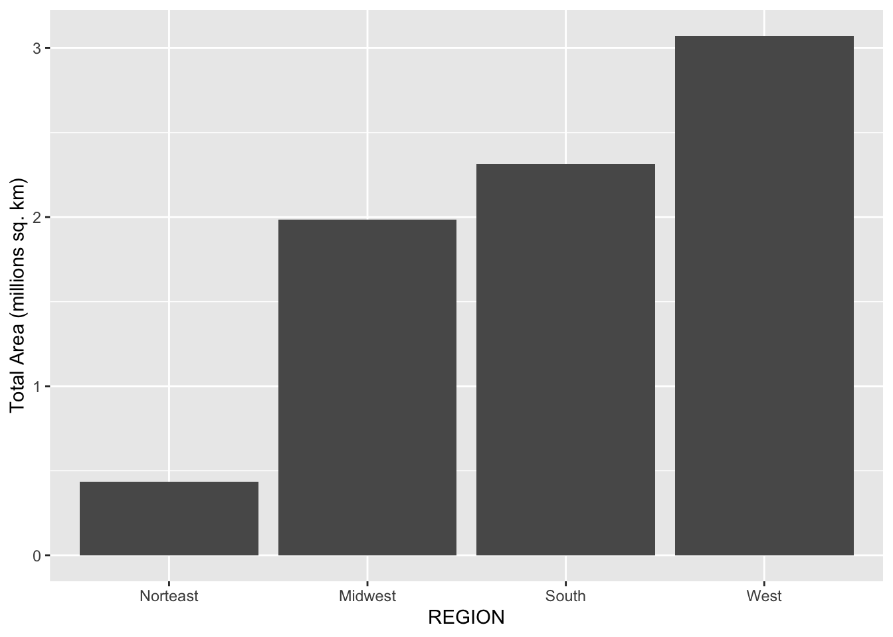
G. How much has population density changed between 2010 and 2015 in each state? Calculate the change (in percent relative to population in 2010) for each state. (5)
## Simple feature collection with 6 features and 7 fields
## geometry type: MULTIPOLYGON
## dimension: XY
## bbox: xmin: -114.8136 ymin: 24.55868 xmax: -71.78699 ymax: 42.04964
## CRS: EPSG:4269
## GEOID NAME REGION AREA total_pop_10 total_pop_15
## 1 01 Alabama South 133709.27 [km^2] 4712651 4830620
## 2 04 Arizona West 295281.25 [km^2] 6246816 6641928
## 3 08 Colorado West 269573.06 [km^2] 4887061 5278906
## 4 09 Connecticut Norteast 12976.59 [km^2] 3545837 3593222
## 5 12 Florida South 151052.01 [km^2] 18511620 19645772
## 6 13 Georgia South 152725.21 [km^2] 9468815 10006693
## geometry Change
## 1 MULTIPOLYGON (((-88.20006 3... 2.503241
## 2 MULTIPOLYGON (((-114.7196 3... 6.325014
## 3 MULTIPOLYGON (((-109.0501 4... 8.018009
## 4 MULTIPOLYGON (((-73.48731 4... 1.336356
## 5 MULTIPOLYGON (((-81.81169 2... 6.126703
## 6 MULTIPOLYGON (((-85.60516 3... 5.6805213.2.5 Why simple features?
Why use the sf package when sp is already tried and tested?
- Fast reading and writing of data
- Enhanced plotting performance
sfobjects are treated as data frames in most operationssffunctions are combined using%>%operator and they work well with the tidyverse packagessffunction names are consistent and intuitive (all begin withst_)
These advantages have prompted the development of spatial packages (including tmap, mapview. and tidycensus) to add support for simple feature objects. However, it will take years for some packages to transition and some will sunset.
In our current workflow we can take advantage of simple features because it is easy to convert between the two classes. Consider the world S3 spatial data frame from the spData package. We convert it to a S4 spatial data frame with the as() method.
The method coerces simple features to Spatial* and Spatial*DataFrame objects.
We convert a S4 spatial data frame into a simple feature data frame with the st_as_sf() function.
We can create basic maps from simple feature data frames with the base plot() method (plot.sf()). The function creates a multi-panel one sub-plot for each variable.
As an example consider the ESRI shapefile containing police expenditure data from Mississippi. The data are on my Web site and are downloaded and imported as follows. Here we download the data as a zipped file, unzip it, import it with the st_read() function then assign a geographic coordinate reference system (CRS) to it using the EPSG number 4326.
download.file("http://myweb.fsu.edu/jelsner/temp/data/police.zip",
"police.zip")
unzip("police.zip")
sfdf <- st_read(dsn = "police")## Reading layer `police' from data source `/Users/jelsner/Desktop/Projects/ASSFG-Book/police' using driver `ESRI Shapefile'
## Simple feature collection with 82 features and 21 fields
## geometry type: POLYGON
## dimension: XY
## bbox: xmin: -91.64356 ymin: 30.19474 xmax: -88.09043 ymax: 35.00496
## CRS: NACreate an S4 spatial object from the simple feature object, give it a geographic coordinate reference system (CRS), and then transform it to a Lambert conformal conic (LCC) projection.
spdf <- as(sfdf, "Spatial")
proj4string(spdf) <- "+proj=longlat +datum=WGS84 +ellps=WGS84"
spdfP <- spTransform(spdf,
CRS = CRS("+proj=lcc +lat_1=60 +lat_2=30 +lon_0=-90 +units=km"))How do you choose what projection to use?
- Check what government agencies are using for the area of interest
- Google ‘best projection for [area]’
- Default to state plane for US states or UTM zones for global areas
Now compare the plot() method with the spplot() method.
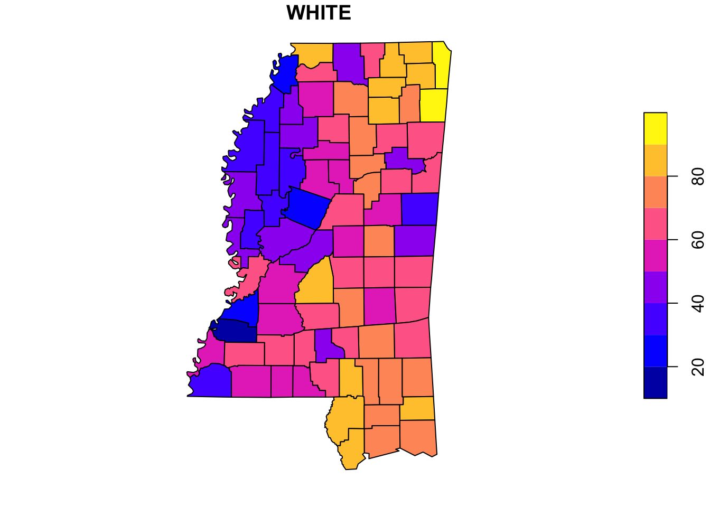
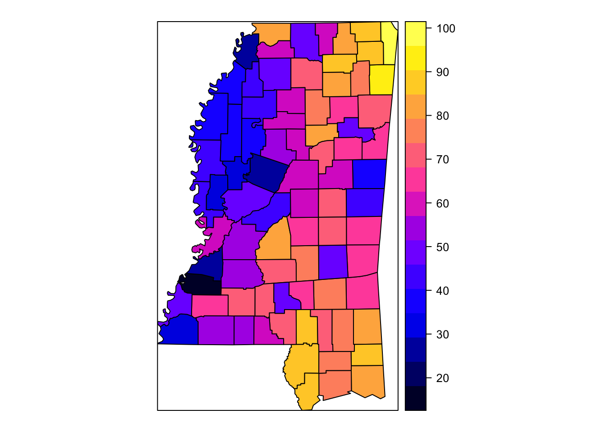
Using the world simple feature data frame we can map country-level population.

Or map the continents.
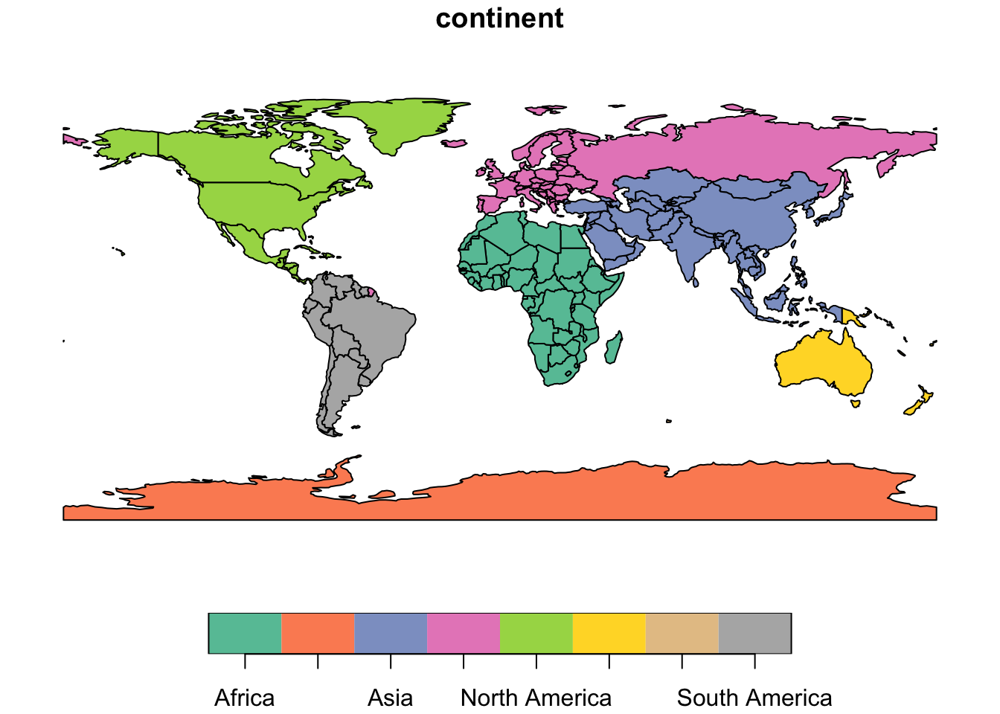
More on making maps with spatial data frames later.
3.3 Geocomputation on simple features
Geocomputations on simple features involve the geometry engine-open source (GEOS).
Let’s return to the Mississippi police data. Here we again download the data as a zipped file, unzip it, import it with the st_read() function then assign a geographic coordinate reference system (CRS) to it using the EPSG number 4326.
download.file(url = "http://myweb.fsu.edu/jelsner/temp/data/police.zip",
destfile = "police.zip")
unzip("police.zip")
sfdf <- st_read(dsn = "police",
layer = "police")## Reading layer `police' from data source `/Users/jelsner/Desktop/Projects/ASSFG-Book/police' using driver `ESRI Shapefile'
## Simple feature collection with 82 features and 21 fields
## geometry type: POLYGON
## dimension: XY
## bbox: xmin: -91.64356 ymin: 30.19474 xmax: -88.09043 ymax: 35.00496
## CRS: NAAs a quick check on the data we just imported we use plot() method. If the simple feature consists of POLYGON geometry the map will be a choropleth. To make small multiple choropleth maps of all the attributes we type
## Warning: plotting the first 10 out of 21 attributes; use max.plot = 21 to plot
## all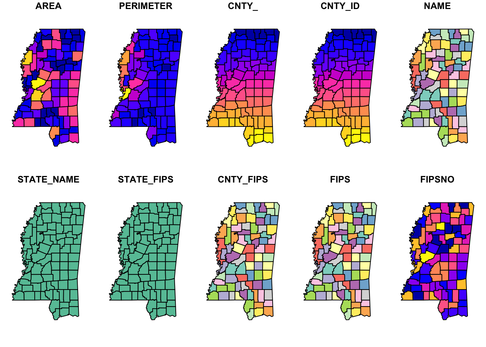
Each column variable gets plotted, which is may not be a good idea.
For geocomputations we should set the coordinate reference system including the spatial units. Here we transform the geographic coordinate reference system to a specific Lambert conic conformal (planar) projection with units of kilometers.
Then to obtain the bounding box of the geometries we use the st_bbox() function.
## xmin ymin xmax ymax
## -155.6854 3714.4452 171.4047 4244.1786It returns an object of class bbox, which is a numeric vector of length four, with elements labeled xmin, ymin, xmax, and ymax.
The function st_as_sfc() has methods for class bbox to generate a polygon around the four bounding box points. Here we apply this function then visualize it using the plot() method.
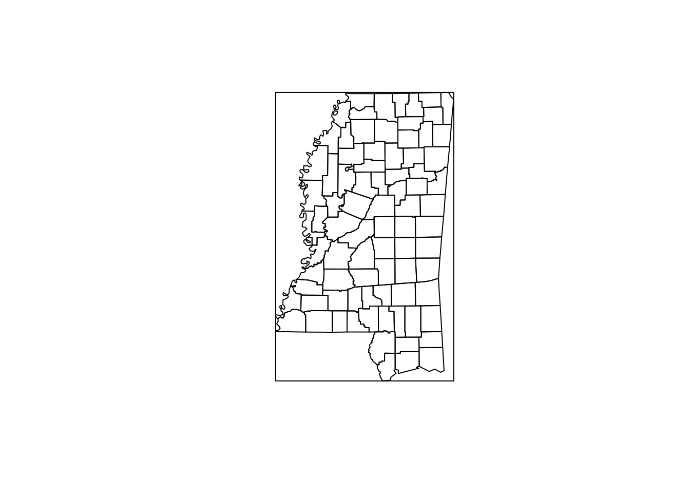
The st_centroid() function computes the geometric center of the spatial objects. By default it does this for all geometries (recall that with the S4 objects we needed byid = TRUE).
## Warning in st_centroid.sf(sfdf): st_centroid assumes attributes are constant
## over geometries of xThe warning is to let you know that the attributes represent a geometry (e.g., areal aggregate) that might be misleading when representing the new geometry.
The object returned is of the same class as sfdf (sf and data.frame). But the geometry is changed from POLYGON to POINT.
## [1] "sf" "data.frame"## [1] "sf" "data.frame"## Geometry set for 82 features
## geometry type: POLYGON
## dimension: XY
## bbox: xmin: -155.6854 ymin: 3714.445 xmax: 171.4047 ymax: 4244.179
## CRS: +proj=lcc +lat_1=60 +lat_2=30 +lon_0=-90 +units=km
## First 5 geometries:## POLYGON ((148.0339 4217.534, 115.9827 4216.624,...## POLYGON ((151.6224 4185.617, 151.3714 4215.633,...## POLYGON ((114.8534 4199.729, 83.13839 4199.54, ...## POLYGON ((68.64999 4197.903, 63.81829 4197.772,...## POLYGON ((-18.16626 4212.457, -17.93877 4227.40...## Geometry set for 82 features
## geometry type: POINT
## dimension: XY
## bbox: xmin: -127.5055 ymin: 3739.791 xmax: 159.1725 ymax: 4230.765
## CRS: +proj=lcc +lat_1=60 +lat_2=30 +lon_0=-90 +units=km
## First 5 geometries:## POINT (128.435 4230.765)## POINT (159.1725 4216.013)## POINT (98.98771 4218.144)## POINT (73.74245 4222.987)## POINT (0.9219511 4228.915)The data frame portion of the simple feature data frame contains the exact same set and values of the attributes.
## Warning: plotting the first 10 out of 21 attributes; use max.plot = 21 to plot
## all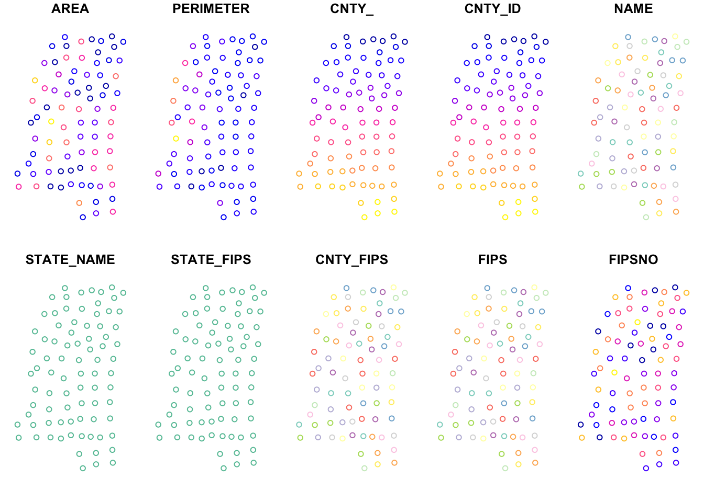
To get the centroid for the state we first create a new simple feature as a union of all counties.
## [1] "sfc_POLYGON" "sfc"The individual county geometries are joined and a single-geometry sfc object is returned. There is no attribute information associated with the new geometry.
Now we compute the centroid for the state.
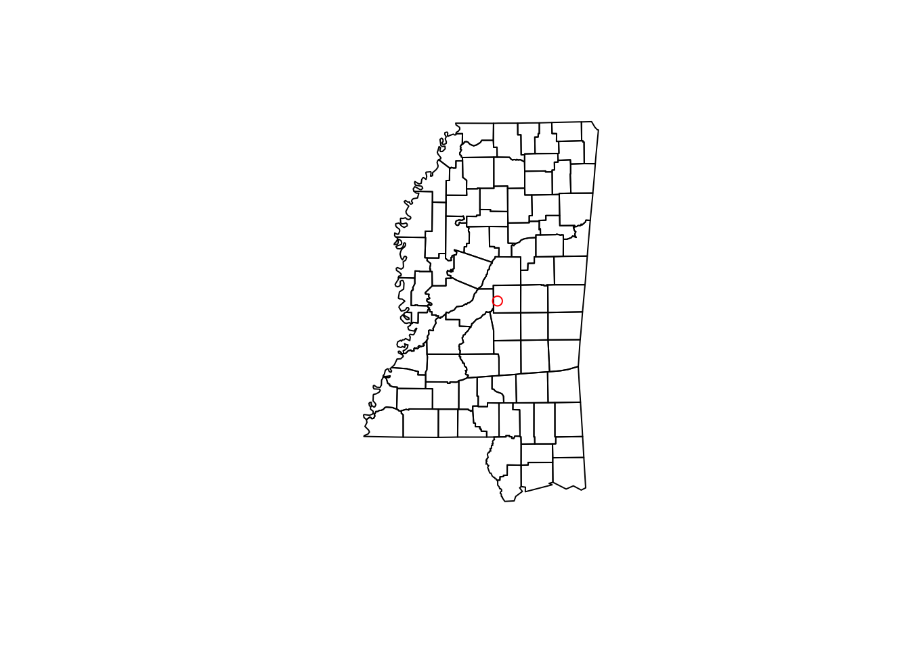
There is no weighting by attribute value.
Which county contains the geographic center of the state? Here we use the geometric binary predicate st_contains().
## [,1]
## [1,] FALSE
## [2,] FALSE
## [3,] FALSE
## [4,] FALSE
## [5,] FALSE
## [6,] FALSE
## [7,] FALSE
## [8,] FALSE
## [9,] FALSE
## [10,] FALSE
## [11,] FALSE
## [12,] FALSE
## [13,] FALSE
## [14,] FALSE
## [15,] FALSE
## [16,] FALSE
## [17,] FALSE
## [18,] FALSE
## [19,] FALSE
## [20,] FALSE
## [21,] FALSE
## [22,] FALSE
## [23,] FALSE
## [24,] FALSE
## [25,] FALSE
## [26,] FALSE
## [27,] FALSE
## [28,] FALSE
## [29,] FALSE
## [30,] FALSE
## [31,] FALSE
## [32,] FALSE
## [33,] FALSE
## [34,] FALSE
## [35,] FALSE
## [36,] FALSE
## [37,] FALSE
## [38,] FALSE
## [39,] FALSE
## [40,] FALSE
## [41,] FALSE
## [42,] FALSE
## [43,] FALSE
## [44,] TRUE
## [45,] FALSE
## [46,] FALSE
## [47,] FALSE
## [48,] FALSE
## [49,] FALSE
## [50,] FALSE
## [51,] FALSE
## [52,] FALSE
## [53,] FALSE
## [54,] FALSE
## [55,] FALSE
## [56,] FALSE
## [57,] FALSE
## [58,] FALSE
## [59,] FALSE
## [60,] FALSE
## [61,] FALSE
## [62,] FALSE
## [63,] FALSE
## [64,] FALSE
## [65,] FALSE
## [66,] FALSE
## [67,] FALSE
## [68,] FALSE
## [69,] FALSE
## [70,] FALSE
## [71,] FALSE
## [72,] FALSE
## [73,] FALSE
## [74,] FALSE
## [75,] FALSE
## [76,] FALSE
## [77,] FALSE
## [78,] FALSE
## [79,] FALSE
## [80,] FALSE
## [81,] FALSE
## [82,] FALSEWe add the sparse = FALSE argument so the result is a matrix containing TRUEs and FALSEs. Since there are 82 counties and one centroid the matrix has 82 rows and 1 column. All matrix entries are FALSE except one.
To see the result we first plot the county geometries, then add the county geometry for the center county and fill it red. Note that we use the matrix to subset this county. Finally we add the location of the state centroid to the plot.
plot(sfdf$geometry)
plot(sfdf$geometry[mat[, 1]], add = TRUE, col = "red")
plot(center.sf, add = TRUE, pch = 9)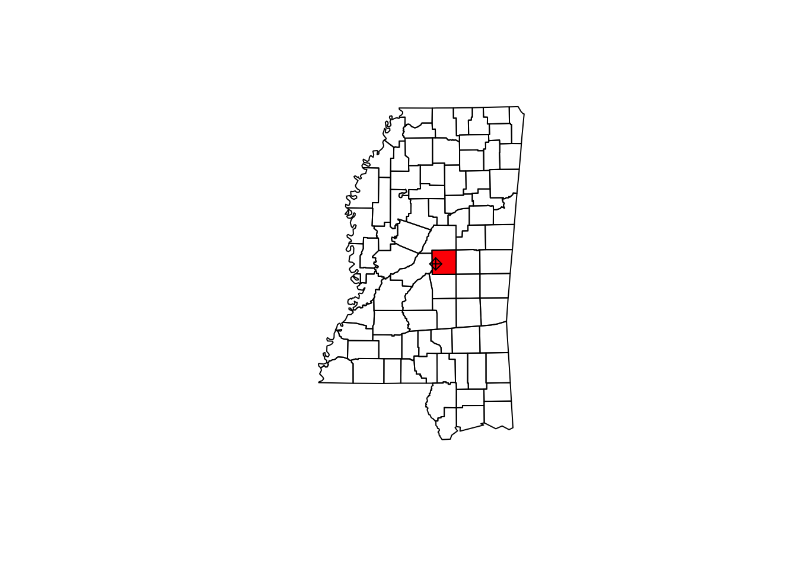
The function st_area() returns a vector of the geographical area (in sq. units) of the spatial object.
## Units: [km^2]
## [1] 1022.408 1090.591 1137.026 1026.594 1247.334 1774.160 1168.702 1014.817
## [9] 1045.083 1075.178 1732.531 1814.067 1489.805 1144.795 1014.629 1343.209
## [17] 1258.023 1266.125 1640.093 1493.901 2258.517 1944.140 1281.794 1771.483
## [25] 1132.148 1524.599 1033.107 1278.218 1073.463 1542.853 1025.853 1164.588
## [33] 1916.674 1049.683 1956.687 1100.144 1887.804 1767.370 1566.158 1136.158
## [41] 2360.048 1112.094 1459.652 1465.834 1910.487 1855.831 1537.387 1622.768
## [49] 2008.926 1789.925 1453.268 2253.060 1768.755 1769.137 1599.931 1234.292
## [57] 1540.603 2020.813 2000.772 1347.462 1834.503 1052.482 1058.725 1103.387
## [65] 1193.226 1475.083 1432.711 1384.481 1271.563 1213.841 1679.382 1780.714
## [73] 1793.521 1936.154 1057.054 1053.063 2138.092 1196.466 1170.242 1826.622
## [81] 1526.969 1234.167Units are given along with a vector of the area values.
There is an attribute called AREA in the data frame but it is better to calculate it from the spatial geometries because we are sure of the units.
What happens when we apply the area function on the centroid object?
## Units: [km^2]
## [1] 0 0 0 0 0 0 0 0 0 0 0 0 0 0 0 0 0 0 0 0 0 0 0 0 0 0 0 0 0 0 0 0 0 0 0 0 0 0
## [39] 0 0 0 0 0 0 0 0 0 0 0 0 0 0 0 0 0 0 0 0 0 0 0 0 0 0 0 0 0 0 0 0 0 0 0 0 0 0
## [77] 0 0 0 0 0 0Compute a 100 km buffer around the state and show the result with a plot.
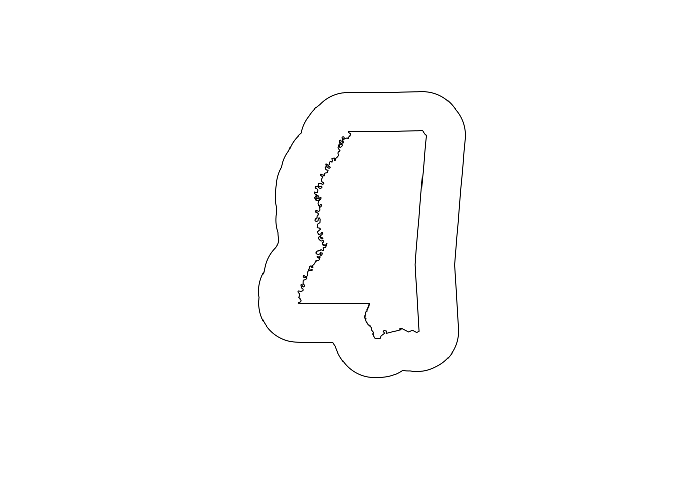
3.3.1 Attribute manipulation
The sf package provides methods that allow sf objects to behave like regular data frames (see https://geocompr.robinlovelace.net/attr.html).
## [1] [ [[<- $<-
## [4] aggregate anti_join arrange
## [7] as.data.frame cbind coerce
## [10] dbDataType dbWriteTable distinct
## [13] filter full_join gather
## [16] group_by group_split identify
## [19] initialize inner_join left_join
## [22] merge mutate nest
## [25] plot print rbind
## [28] rename right_join sample_frac
## [31] sample_n select semi_join
## [34] separate_rows separate show
## [37] slice slotsFromS3 spread
## [40] st_agr st_agr<- st_area
## [43] st_as_sf st_bbox st_boundary
## [46] st_buffer st_cast st_centroid
## [49] st_collection_extract st_convex_hull st_coordinates
## [52] st_crop st_crs st_crs<-
## [55] st_difference st_filter st_geometry
## [58] st_geometry<- st_interpolate_aw st_intersection
## [61] st_intersects st_is_valid st_is
## [64] st_join st_line_merge st_m_range
## [67] st_make_valid st_nearest_points st_node
## [70] st_normalize st_point_on_surface st_polygonize
## [73] st_precision st_reverse st_sample
## [76] st_segmentize st_set_precision st_shift_longitude
## [79] st_simplify st_snap st_sym_difference
## [82] st_transform st_triangulate st_union
## [85] st_voronoi st_wrap_dateline st_write
## [88] st_z_range st_zm summarise
## [91] transform transmute ungroup
## [94] unite unnest
## see '?methods' for accessing help and source codeMany of these functions were developed for data frames including rbind() (for binding rows of data together) and $ (for creating new columns). The key feature of sf objects is that they store spatial and non-spatial data in the same way, as columns in a data.frame.
The geometry column of sf objects is typically called geometry but any name can be used. This allows geometries with any name to be used.
The following command, for example, creates a geometry column named g.
## Simple feature collection with 177 features and 1 field
## geometry type: MULTIPOLYGON
## dimension: XY
## bbox: xmin: -180 ymin: -90 xmax: 180 ymax: 83.64513
## CRS: EPSG:4326
## First 10 features:
## n g
## 1 Fiji MULTIPOLYGON (((180 -16.067...
## 2 Tanzania MULTIPOLYGON (((33.90371 -0...
## 3 Western Sahara MULTIPOLYGON (((-8.66559 27...
## 4 Canada MULTIPOLYGON (((-122.84 49,...
## 5 United States MULTIPOLYGON (((-122.84 49,...
## 6 Kazakhstan MULTIPOLYGON (((87.35997 49...
## 7 Uzbekistan MULTIPOLYGON (((55.96819 41...
## 8 Papua New Guinea MULTIPOLYGON (((141.0002 -2...
## 9 Indonesia MULTIPOLYGON (((141.0002 -2...
## 10 Argentina MULTIPOLYGON (((-68.63401 -...Thus sf objects take advantage of R’s data analysis capabilities to be used on geographic data. It’s worth reviewing how to discover basic properties of vector data objects.
For example, we get information about the size and breadth of the world simple feature data frame from the spData package using dim(), nrow(), etc.
## [1] 177 11## [1] 177## [1] 11The data contains ten non-geographic columns (and one geometry list-column) with almost 200 rows representing the world’s countries.
Extracting the attribute data from an sf object is the same as removing its geometry.
## [1] "tbl_df" "tbl" "data.frame"Recall attributes are the variables (stored as columns) in a spatial data frame.
There is no harm in keeping the geometry column because data operations on sf objects only change an object’s geometry when appropriate (e.g. by dissolving borders between adjacent polygons following aggregation). This means that the speed of operations with attribute data in sf objects is the same as with columns in a data frames.
3.3.1.1 Attribute subsetting
Subset functions include [, subset() and $. dplyr subset functions include select(), filter(), and pull(). Both sets of functions preserve the spatial components of attribute data in sf objects.
The [ operator can subset rows and columns. We use indices to specify the elements we wish to extract from an object, e.g. object[i, j], with i and j typically being numbers representing rows and columns. Leaving i or j empty returns all rows or columns, so world[1:5, ] returns the first five rows and all columns. Here are some examples.
## Simple feature collection with 3 features and 10 fields
## geometry type: MULTIPOLYGON
## dimension: XY
## bbox: xmin: -180 ymin: -18.28799 xmax: 180 ymax: 71.35776
## CRS: EPSG:4326
## # A tibble: 3 x 11
## iso_a2 name_long continent region_un subregion type area_km2 pop lifeExp
## <chr> <chr> <chr> <chr> <chr> <chr> <dbl> <dbl> <dbl>
## 1 FJ Fiji Oceania Oceania Melanesia Sove… 19290. 8.86e5 70.0
## 2 US United S… North Am… Americas Northern… Coun… 9510744. 3.19e8 78.8
## 3 ID Indonesia Asia Asia South-Ea… Sove… 1819251. 2.55e8 68.9
## # … with 2 more variables: gdpPercap <dbl>, geom <MULTIPOLYGON [°]>## Simple feature collection with 177 features and 3 fields
## geometry type: MULTIPOLYGON
## dimension: XY
## bbox: xmin: -180 ymin: -90 xmax: 180 ymax: 83.64513
## CRS: EPSG:4326
## # A tibble: 177 x 4
## iso_a2 name_long continent geom
## <chr> <chr> <chr> <MULTIPOLYGON [°]>
## 1 FJ Fiji Oceania (((180 -16.06713, 180 -16.55522, 179.3641 -1…
## 2 TZ Tanzania Africa (((33.90371 -0.95, 34.07262 -1.05982, 37.698…
## 3 EH Western Sah… Africa (((-8.66559 27.65643, -8.665124 27.58948, -8…
## 4 CA Canada North Amer… (((-122.84 49, -122.9742 49.00254, -124.9102…
## 5 US United Stat… North Amer… (((-122.84 49, -120 49, -117.0312 49, -116.0…
## 6 KZ Kazakhstan Asia (((87.35997 49.21498, 86.59878 48.54918, 85.…
## 7 UZ Uzbekistan Asia (((55.96819 41.30864, 55.92892 44.99586, 58.…
## 8 PG Papua New G… Oceania (((141.0002 -2.600151, 142.7352 -3.289153, 1…
## 9 ID Indonesia Asia (((141.0002 -2.600151, 141.0171 -5.859022, 1…
## 10 AR Argentina South Amer… (((-68.63401 -52.63637, -68.25 -53.1, -67.75…
## # … with 167 more rows## Simple feature collection with 177 features and 2 fields
## geometry type: MULTIPOLYGON
## dimension: XY
## bbox: xmin: -180 ymin: -90 xmax: 180 ymax: 83.64513
## CRS: EPSG:4326
## # A tibble: 177 x 3
## name_long lifeExp geom
## <chr> <dbl> <MULTIPOLYGON [°]>
## 1 Fiji 70.0 (((180 -16.06713, 180 -16.55522, 179.3641 -16.80135, …
## 2 Tanzania 64.2 (((33.90371 -0.95, 34.07262 -1.05982, 37.69869 -3.096…
## 3 Western Sahara NA (((-8.66559 27.65643, -8.665124 27.58948, -8.6844 27.…
## 4 Canada 82.0 (((-122.84 49, -122.9742 49.00254, -124.9102 49.98456…
## 5 United States 78.8 (((-122.84 49, -120 49, -117.0312 49, -116.0482 49, -…
## 6 Kazakhstan 71.6 (((87.35997 49.21498, 86.59878 48.54918, 85.76823 48.…
## 7 Uzbekistan 71.0 (((55.96819 41.30864, 55.92892 44.99586, 58.50313 45.…
## 8 Papua New Gui… 65.2 (((141.0002 -2.600151, 142.7352 -3.289153, 144.584 -3…
## 9 Indonesia 68.9 (((141.0002 -2.600151, 141.0171 -5.859022, 141.0339 -…
## 10 Argentina 76.3 (((-68.63401 -52.63637, -68.25 -53.1, -67.75 -53.85, …
## # … with 167 more rowsHere we use logical vectors for subsetting. First we create a logical vector sel_area
## [1] FALSE FALSE FALSE FALSE FALSE FALSE## Mode FALSE TRUE
## logical 170 7And then we select only cases from the world simple feature dsta frame where the elements of the sel_area vector are TRUE.
This creates a new simple feature data frame, small_countries, containing nations whose surface area is smaller than 10,000 sq km.
The base R function subset() provides another way to get the same result.
Importantly the dplyr verbs can also be used on sf objects. The main dplyr subsetting functions are select() and filter().
But caution! The dplyr (and raster) package has a function called select(). When using both packages, the function in the most recently attached package will be used, ‘masking’ the incumbent function.
This can generate error messages containing text like: unable to find an inherited method for function ‘select’ for signature “sf”. To avoid this error message, and prevent ambiguity, we use the long-form function name, prefixed by the package name and two colons dplyr::select().
The select() function selects columns by name or position. For example, we can select only two columns, name_long and pop, with the following command.
## [1] "name_long" "pop" "geom"Note that the result is a simple feature data frame with the geometry column.
The select() function lets us subset and rename columns at the same time.
world2 <- select(world,
name_long,
population = pop)
world2 <- world %>%
select(name_long,
population = pop)
names(world2)## [1] "name_long" "population" "geom"The pull() function will return a single vector.
## [1] 885806 52234869 NA 35535348 318622525 17288285The filter() function is dplyr’s equivalent of base R subset() function. It keeps only rows matching given criteria, e.g., only countries with a very high average life expectancy.
## Simple feature collection with 6 features and 10 fields
## geometry type: MULTIPOLYGON
## dimension: XY
## bbox: xmin: -9.392884 ymin: -43.6346 xmax: 153.5695 ymax: 69.10625
## CRS: EPSG:4326
## # A tibble: 6 x 11
## iso_a2 name_long continent region_un subregion type area_km2 pop lifeExp
## <chr> <chr> <chr> <chr> <chr> <chr> <dbl> <dbl> <dbl>
## 1 IL Israel Asia Asia Western … Coun… 22991. 8.22e6 82.2
## 2 SE Sweden Europe Europe Northern… Sove… 450582. 9.70e6 82.3
## 3 CH Switzerl… Europe Europe Western … Sove… 46185. 8.19e6 83.2
## 4 LU Luxembou… Europe Europe Western … Sove… 2417. 5.56e5 82.2
## 5 ES Spain Europe Europe Southern… Sove… 502306. 4.65e7 83.2
## 6 AU Australia Oceania Oceania Australi… Coun… 7687614. 2.35e7 82.3
## # … with 2 more variables: gdpPercap <dbl>, geom <MULTIPOLYGON [°]>3.3.1.2 Attribute aggregation
Aggregation summarize datasets by a grouping variable, typically an attribute column. An example of attribute aggregation is calculating the number of people per continent based on country-level data (one row per country).
The world dataset contains the necessary ingredients: the columns pop and continent, the population and the grouping variable, respectively. The goal is to find the sum() of country populations for each continent.
This is done with the group_by() and summarize() functions from the dplyr package.
library(dplyr)
world_agg <- world %>%
group_by(continent) %>%
summarize(pop = sum(pop, na.rm = TRUE))
head(world_agg)## Simple feature collection with 6 features and 2 fields
## geometry type: MULTIPOLYGON
## dimension: XY
## bbox: xmin: -180 ymin: -90 xmax: 180 ymax: 83.64513
## CRS: EPSG:4326
## # A tibble: 6 x 3
## continent pop geom
## <chr> <dbl> <MULTIPOLYGON [°]>
## 1 Africa 1.15e9 (((49.54352 -12.46983, 49.80898 -12.89528, 50.05651 -13…
## 2 Antarctica 0. (((-48.66062 -78.04702, -48.1514 -78.04707, -46.66286 -…
## 3 Asia 4.31e9 (((120.295 -10.25865, 118.9678 -9.557969, 119.9003 -9.3…
## 4 Europe 6.69e8 (((-51.6578 4.156232, -52.24934 3.241094, -52.55642 2.5…
## 5 North Ameri… 5.65e8 (((-61.68 10.76, -61.105 10.89, -60.895 10.855, -60.935…
## 6 Oceania 3.78e7 (((169.6678 -43.55533, 170.5249 -43.03169, 171.1251 -42…This approach gives us control over the new column names. For example to calculate the Earth’s population and the number of countries type
## Simple feature collection with 1 feature and 2 fields
## geometry type: MULTIPOLYGON
## dimension: XY
## bbox: xmin: -180 ymin: -90 xmax: 180 ymax: 83.64513
## CRS: EPSG:4326
## # A tibble: 1 x 3
## pop nC geom
## <dbl> <int> <MULTIPOLYGON [°]>
## 1 7.15e9 177 (((-163.7129 -78.59567, -163.7129 -78.59567, -163.1058 -78.22…The two columns in the resulting attribute table are pop and nC. The functions sum() and n() were the aggregating functions.
The result is an sf object with a single row representing the world (this works thanks to the geometric operation called ‘union’).
We can chain together functions to find the world’s three most populous continents and the number of countries they contain.
world %>%
select(pop, continent) %>%
group_by(continent) %>%
summarize(pop = sum(pop, na.rm = TRUE),
nC = n()) %>%
top_n(n = 3, wt = pop) %>%
st_set_geometry(value = NULL) ## # A tibble: 3 x 3
## continent pop nC
## * <chr> <dbl> <int>
## 1 Africa 1154946633 51
## 2 Asia 4311408059 47
## 3 Europe 669036256 393.3.1.3 Attribute joining
Combining data from different sources based on a shared ‘key’ variable is common. The dplyr package has multiple join functions including left_join() and inner_join(). Names follow conventions used in the SQL database language.
Here we see how to join non-spatial datasets to sf objects. Join functions work the same on data.frames and sf objects. The most common type of attribute join on spatial data takes an sf object as the first argument and adds columns to it from a data.frame specified as the second argument.
For example, we combine data on coffee production with the world dataset. The coffee data is in a data frame called coffee_data from the spData package (see ?coffee_data for details). It has 3 columns: name_long names major coffee-producing nations and coffee_production_2016 and coffee_production_2017 contain estimated values for coffee production in units of 60-kg bags in each year.
The left_join() function, which preserves the first dataset, merges world with coffee_data.
## Joining, by = "name_long"## [1] "sf" "tbl_df" "tbl" "data.frame"Because the input data frames share a variable (name_long) the join works without using the by = argument (see ?left_join for details). The result is an sf object identical to the original world object but with two new variables (with column indices 11 and 12) on coffee production.
## [1] "iso_a2" "name_long" "continent"
## [4] "region_un" "subregion" "type"
## [7] "area_km2" "pop" "lifeExp"
## [10] "gdpPercap" "geom" "coffee_production_2016"
## [13] "coffee_production_2017"For joining to work, a ‘key’ variable must be supplied in both datasets.
Another feature of left_join() is that the results have the same number of rows as the first dataset. Although there are only 47 rows of data in coffee_data, all 177 the country records in world are kept intact in world_coffee (and world_coffee2). Rows in the first dataset with no match are assigned NA values for the new coffee production variables.
If we want to keep only countries that have a match in the key variable then we use inner_join().
## Joining, by = "name_long"## [1] 45Note that the result of inner_join() has only 45 rows compared with 47 in coffee_data. What happened to the other two rows? We can identify the rows that did not match using the setdiff() function.
## [1] "Congo, Dem. Rep. of" "Others"Others accounts for one row not present in the world_coffee dataset and name of the Democratic Republic of the Congo accounts for the other. The name has been abbreviated, causing the join to miss it.
Here we use the str_subset() function (string matching) from the stringr package to confirm what ‘Congo, Dem. Rep.’ of should be.
## [1] "Democratic Republic of the Congo"To fix this issue, we will create a new version of coffee_data and update the name. Note: grepl() returns a logical vector for names that contain ‘Congo’.
coffee_data$name_long[grepl("Congo", coffee_data$name_long)] <- str_subset(world$name_long, "Dem*.+Congo")
world_coffee_match <- inner_join(world, coffee_data)## Joining, by = "name_long"## [1] 46It is also possible to join in the other direction: starting with a regular data frame and adding variables from a simple features object.
Often, we would like to create a new column based on already existing columns. For example, we want to calculate population density for each country. For this we need to divide a population column, here pop, by an area column, here area_km2 with unit area in square kilometers.
We use one of the verbs - mutate() or transmute(). mutate() adds new columns in the sf object (the last one is reserved for the geometry).
## Simple feature collection with 177 features and 11 fields
## geometry type: MULTIPOLYGON
## dimension: XY
## bbox: xmin: -180 ymin: -90 xmax: 180 ymax: 83.64513
## CRS: EPSG:4326
## # A tibble: 177 x 12
## iso_a2 name_long continent region_un subregion type area_km2 pop lifeExp
## * <chr> <chr> <chr> <chr> <chr> <chr> <dbl> <dbl> <dbl>
## 1 FJ Fiji Oceania Oceania Melanesia Sove… 1.93e4 8.86e5 70.0
## 2 TZ Tanzania Africa Africa Eastern … Sove… 9.33e5 5.22e7 64.2
## 3 EH Western … Africa Africa Northern… Inde… 9.63e4 NA NA
## 4 CA Canada North Am… Americas Northern… Sove… 1.00e7 3.55e7 82.0
## 5 US United S… North Am… Americas Northern… Coun… 9.51e6 3.19e8 78.8
## 6 KZ Kazakhst… Asia Asia Central … Sove… 2.73e6 1.73e7 71.6
## 7 UZ Uzbekist… Asia Asia Central … Sove… 4.61e5 3.08e7 71.0
## 8 PG Papua Ne… Oceania Oceania Melanesia Sove… 4.65e5 7.76e6 65.2
## 9 ID Indonesia Asia Asia South-Ea… Sove… 1.82e6 2.55e8 68.9
## 10 AR Argentina South Am… Americas South Am… Sove… 2.78e6 4.30e7 76.3
## # … with 167 more rows, and 3 more variables: gdpPercap <dbl>,
## # geom <MULTIPOLYGON [°]>, pop_dens <dbl>The difference between mutate() and transmute() is that the latter skips all other existing columns (except for the sticky geometry column):
More information: https://geocompr.robinlovelace.net/attr.html
3.3.2 Areal weighted interpolation
Areal weighted interpolation estimates the value of some attribute from a set of polygons to an overlapping but incongruent set of target polygons. For example, suppose we want demographic information given at the Census tract level to be estimated within the tornado damage path.
Obviously tornado damage paths do not align with census tract boundaries, so areal interpolation is used to produce population estimates at the tornado level.
Two function prefixes are available in the areal package that allow users to take advantage of RStudio’s auto complete.
ar_- data and functions that are used for multiple interpolation methodsaw_- functions that are used specifically for areal weighted interpolation
The package contains four overlapping data sets.
ar_stl_race(2017 ACS demographic counts at the census tract level; n = 106)ar_stl_asthma(2017 asthma rates at the census tract level; n = 106)ar_stl_wards(the 2010 political subdivisions in St. Louis; n = 28).ar_stl_wardsClippedClipped (the 2010 political subdivisions in St. Louis clipped to the Mississippi River shoreline; n = 28).
Functions in the areal package assume that data are simple feature data frames.
A projected coordinate reference system is recommend. All data must be projected using the same system. Unnecessary columns should be removed prior to projection.
Areal weighted interpolation makes a single (significant) assumption about the data. Populations are evenly distributed within the source data.
Imagine a census tract with 3,000 residents. Areal weighted interpolation assumes that these 3,000 residents are evenly spread through out the tract.
This assumption is not likely to be valid in general (e.g., tracts with large parks or dense housing developments alongside commercial buildings).
The interpolation is done with the aw_interpolate() function.
3.3.2.1 Example: Population given at tract level interpolated to the ward level
The number of people within each Census tract is known. But suppose we want the number of people in each ward. Wards are overlapping but incongruent polygons relative to the tracts.
The simple feature data frame ar_stl_wards contains a vector of unique ward numbers (WARD) and a list of unique POLYGON geometry features.
## Rows: 28
## Columns: 4
## $ OBJECTID <dbl> 1, 2, 3, 4, 5, 6, 7, 8, 9, 10, 11, 12, 13, 14, 15, 16, 17, 1…
## $ WARD <int> 1, 2, 3, 4, 5, 6, 7, 8, 9, 10, 11, 12, 13, 14, 15, 16, 17, 1…
## $ AREA <dbl> 46138761, 267817711, 66291644, 53210707, 60462396, 64337271,…
## $ geometry <POLYGON [m]> POLYGON ((740184.2 4286431,..., POLYGON ((742392.1 4…The simple feature data frame ar_stl_race contains a vector of unique idenfiers (GEOID), a vector of total population TOTAL_E, and a list of unique POLYGON geometry features.
## Rows: 106
## Columns: 24
## $ GEOID <chr> "29510112100", "29510116500", "29510110300", "29510103700",…
## $ STATEFP <chr> "29", "29", "29", "29", "29", "29", "29", "29", "29", "29",…
## $ COUNTYFP <chr> "510", "510", "510", "510", "510", "510", "510", "510", "51…
## $ TRACTCE <chr> "112100", "116500", "110300", "103700", "103800", "104500",…
## $ NAMELSAD <chr> "Census Tract 1121", "Census Tract 1165", "Census Tract 110…
## $ ALAND <dbl> 6936664, 904024, 938287, 910953, 1640334, 1939712, 962321, …
## $ AWATER <dbl> 0, 0, 0, 0, 35369, 0, 0, 0, 0, 0, 0, 0, 0, 0, 0, 0, 0, 0, 0…
## $ TOTAL_E <dbl> 4253, 4590, 1936, 2406, 3856, 1990, 1826, 2819, 2981, 2796,…
## $ TOTAL_M <dbl> 468, 525, 360, 215, 242, 225, 285, 488, 308, 408, 279, 227,…
## $ WHITE_E <dbl> 2827, 2194, 47, 2184, 3383, 1487, 32, 67, 1098, 289, 471, 2…
## $ WHITE_M <dbl> 378, 411, 40, 255, 269, 195, 25, 56, 215, 198, 233, 229, 14…
## $ BLACK_E <dbl> 1147, 1885, 1889, 122, 300, 162, 1787, 2713, 1528, 2401, 17…
## $ BLACK_M <dbl> 393, 414, 361, 117, 208, 125, 281, 493, 221, 388, 251, 86, …
## $ AIAN_E <dbl> 0, 0, 0, 0, 0, 1, 0, 0, 39, 0, 0, 9, 0, 13, 0, 6, 6, 0, 0, …
## $ AIAN_M <dbl> 11, 11, 11, 11, 11, 3, 11, 11, 60, 11, 11, 14, 11, 19, 11, …
## $ ASIAN_E <dbl> 179, 279, 0, 48, 62, 280, 0, 24, 196, 40, 0, 217, 12, 305, …
## $ ASIAN_M <dbl> 86, 172, 11, 55, 60, 132, 11, 28, 98, 36, 11, 105, 13, 95, …
## $ NHPI_E <dbl> 0, 0, 0, 0, 0, 0, 7, 0, 0, 0, 5, 16, 0, 0, 0, 0, 0, 0, 0, 0…
## $ NHPI_M <dbl> 11, 11, 11, 11, 11, 11, 13, 11, 11, 11, 7, 23, 11, 11, 11, …
## $ OTHER_E <dbl> 15, 59, 0, 0, 77, 0, 0, 0, 0, 0, 90, 31, 11, 13, 0, 0, 3, 0…
## $ OTHER_M <dbl> 23, 67, 11, 11, 120, 11, 11, 11, 11, 11, 72, 36, 12, 21, 11…
## $ TWOPLUS_E <dbl> 85, 173, 0, 52, 34, 60, 0, 15, 120, 66, 122, 55, 49, 36, 59…
## $ TWOPLUS_M <dbl> 68, 126, 11, 49, 38, 39, 11, 33, 97, 96, 86, 50, 68, 42, 71…
## $ geometry <POLYGON [m]> POLYGON ((734633.3 4279479,..., POLYGON ((740098.5 …Analogy: The cookie cutters are the simple feature polygons defining the boundaries we want values interpolated to. This is defined as the target object which is the first argument in the aw_interpolate() function. We need to identify each cookie cutter with a unique target id (tid).
The dough is the underlying simple feature variable that we want interpolated. It is defined in a source simple feature data frame (source =). Each feature must have a unique id (sid). The variable to be interpolated is specified in the extensive = argument.
Here the cookie cutters are the ward POLYGONs and the tract-level population (TOTAL_E) is the dough.
Finally, to ensure that all individuals within each tract are allocated out to wards we use weight = "sum".
aw_interpolate(ar_stl_wards,
tid = WARD,
source = ar_stl_race,
sid = "GEOID",
extensive = "TOTAL_E",
weight = "sum",
output = "sf")## Simple feature collection with 28 features and 4 fields
## geometry type: POLYGON
## dimension: XY
## bbox: xmin: 733361.8 ymin: 4268336 xmax: 746157.7 ymax: 4295504
## CRS: EPSG:26915
## First 10 features:
## OBJECTID WARD AREA TOTAL_E geometry
## 1 1 1 46138761 7991.565 POLYGON ((740184.2 4286431,...
## 2 2 2 267817711 12145.021 POLYGON ((742392.1 4289178,...
## 3 3 3 66291644 7344.287 POLYGON ((742956.1 4284113,...
## 4 4 4 53210707 8457.672 POLYGON ((739557.6 4284080,...
## 5 5 5 60462396 8783.377 POLYGON ((744883.8 4281632,...
## 6 6 6 64337271 14050.399 POLYGON ((742501.6 4279976,...
## 7 7 7 101268146 15840.086 POLYGON ((745618.6 4279867,...
## 8 8 8 45966410 12188.131 POLYGON ((739842.8 4277724,...
## 9 9 9 73993891 14217.149 POLYGON ((742619.4 4276734,...
## 10 10 10 62915358 11239.213 POLYGON ((737257.7 4277050,...The function is capable of interpolating extensive and intensive variables.
Intensive variable: Variable that is independent of the spatial units (e.g., population density, percentages); variable that has been normalized in some fashion.
Extensive variable: Data dependent on the spatial units (e.g., population totals).
If the variable is intensive then use intensive = instead of extensive = to specify the variable to be interpolated.
Options are documented in both the function documentation (use ?aw_interpolate) as well as in a dedicated vignette.
3.3.2.2 Estimate total residential population under each tornado path during 2014
Here we are interested in the total (residential) population under each tornado occurring in Florida during 2014. We begin by creating a polygon geometry for each tornado record.
Import the data. There are two files each with the exact set of tornadoes but with different geometries. The ..-aspath.zip has LINE geometry indicating the straight line track.
## Reading layer `1950-2018-torn-aspath' from data source `/Users/jelsner/Desktop/Projects/ASSFG-Book/1950-2018-torn-aspath' using driver `ESRI Shapefile'
## Simple feature collection with 63645 features and 22 fields
## geometry type: LINESTRING
## dimension: XY
## bbox: xmin: -163.53 ymin: 18.13 xmax: -64.9 ymax: 61.02
## CRS: 4326Next we project the geographic coordinate reference system to a specific Lambert conic conformal projection. The spatial units are set to meters.
Next we add a buffer to the geometries to represent the tornado path (‘footprint’). The width of the buffer is 1/2 the width given in the attribute table in the column wid. First we create new variables giving the width (and length) in units of meters.
sfdfL <- sfdfL %>%
mutate(Width = wid * .9144,
Length = len * 1609.34)
sfdfB <- st_buffer(sfdfL,
dist = sfdfL$Width/2,
endCapStyle = 'ROUND')Next, get the population data from the U.S. Census Bureau. First get an API key from http://api.census.gov/data/key_signup.html
Here I’ve already done this and put the relevant data on my website. The functions are from Kyle Walker’s tidycensus package. Here is how I did it. You will need to request and get a U.S. Census API. https://www.census.gov/developers/
The 2014 population data are avaible using the get_acs() function from the tidycensus package. Here tract-level total population for the country (B01003_001). If we want tracts or smaller then we need to specify by state with state =.
tractPop <- get_acs(geography = "tract",
year = 2014,
variables = "B01003_001",
state = "FL",
geometry = TRUE)
tractPop <- st_transform(tractPop,
crs = st_crs(sfdfB))
st_write(tractPop,
dsn = "tractPop.shp")Here we start with the Census data that was written out using the code above and placed on my website as a shapefile (tractPop).
download.file(url = "http://myweb.fsu.edu/jelsner/temp/data/tractPop.zip",
destfile = "temporary.zip")
unzip("temporary.zip")
tractPop <- st_read(dsn = "tractPop") ## Reading layer `tractPop' from data source `/Users/jelsner/Desktop/Projects/ASSFG-Book/tractPop' using driver `ESRI Shapefile'
## replacing null geometries with empty geometries
## Simple feature collection with 4245 features and 5 fields (with 30 geometries empty)
## geometry type: GEOMETRY
## dimension: XY
## bbox: xmin: 225332.7 ymin: 3119658 xmax: 1008441 ymax: 3823619
## proj4string: +proj=lcc +lat_1=60 +lat_2=30 +lat_0=0 +lon_0=-90 +x_0=0 +y_0=0 +ellps=WGS84 +units=m +no_defs## Simple feature collection with 6 features and 5 fields
## geometry type: POLYGON
## dimension: XY
## bbox: xmin: 991564.1 ymin: 3406415 xmax: 997780 ymax: 3416481
## proj4string: +proj=lcc +lat_1=60 +lat_2=30 +lat_0=0 +lon_0=-90 +x_0=0 +y_0=0 +ellps=WGS84 +units=m +no_defs
## GEOID NAME variable estimate
## 1 12099000101 Census Tract 1.01, Palm Beach County, Florida B01003_001 7410
## 2 12099000102 Census Tract 1.02, Palm Beach County, Florida B01003_001 2686
## 3 12099000202 Census Tract 2.02, Palm Beach County, Florida B01003_001 6826
## 4 12099000204 Census Tract 2.04, Palm Beach County, Florida B01003_001 4272
## 5 12099000205 Census Tract 2.05, Palm Beach County, Florida B01003_001 5280
## 6 12099000206 Census Tract 2.06, Palm Beach County, Florida B01003_001 7022
## moe geometry
## 1 643 POLYGON ((991911.3 3415960,...
## 2 291 POLYGON ((995097.7 3416315,...
## 3 787 POLYGON ((992333.6 3411963,...
## 4 434 POLYGON ((991630.8 3410936,...
## 5 572 POLYGON ((995190.4 3408040,...
## 6 567 POLYGON ((991652.6 3410707,...Here the cookie cutters are the damage path POLYGONS and the tract-level population estimate is the dough.
Here we want weight = "total" so that the proportion of the tract area that is covered by the tornado path is used to weight the population of the tract. To simply preview the weights we use the aw_preview_weights() function as follows. The first argument is the cookie cutter simple feature data frame name, the second argument (tid) is the unique row identifier in the cookie cutter data frame. The source = argument names the simple feature data frame from which the cuts are made (here tractPop). The sid = argument is the unique row identifier in the source data frame. The final argument is the type of interpolation (either intensive or extensive in quotes).
## # A tibble: 34 x 3
## GEOID extensiveSum extensiveTotal
## <chr> <dbl> <dbl>
## 1 12003040102 1 0.000354
## 2 12005000202 1 0.00000523
## 3 12009060300 1 0.000404
## 4 12013010200 1 0.000131
## 5 12013010300 1 0.00859
## 6 12023110601 1 0.000312
## 7 12037970200 1 0.000000651
## 8 12039020400 1 0.00535
## 9 12039020800 1 0.00970
## 10 12051000300 1 0.0000000495
## # … with 24 more rowsThe first tornado in sfdfB simple features data frame covers .035% (extensiveTotal column) of the tract with GEOID 12003040102.
To perform the interpolation we remove the type = argument and replace it with the extensive = argument and where the value of the argument is the name of the variable we want to interpolated. Here that variable is the population estimate at the tract level with name estimate. We put the column name in quotes. We specify weight = "total" since we want the interpolation to have the same units as the extensive variable (here population) and we specify the output = to be a simple feature.
out.sf <- aw_interpolate(sfdfB,
tid = om,
source = tractPop,
sid = GEOID,
extensive = "estimate",
weight = "total",
output = "sf")The simple feature data frame (out.sf) contains all the same variables as sfdfB with a new column estimate giving the estimated population under the path of each tornado in Florida during 2014.
## Simple feature collection with 6 features and 25 fields
## geometry type: POLYGON
## dimension: XY
## bbox: xmin: 425770.4 ymin: 3365110 xmax: 938635.3 ymax: 3803557
## CRS: +proj=lcc +lat_1=60 +lat_2=30 +lon_0=-90 +units=m
## om yr mo dy date time tz st stf stn mag inj fat loss closs
## 1 493361 2014 3 6 2014-03-06 11:00:00 3 FL 12 0 0 0 0 0.0 0
## 2 493362 2014 3 6 2014-03-06 11:38:00 3 FL 12 0 0 0 0 0.0 0
## 3 495142 2014 3 6 2014-03-06 13:30:00 3 FL 12 0 0 0 0 0.0 0
## 4 498063 2014 3 29 2014-03-29 12:20:00 3 FL 12 0 0 0 0 0.0 0
## 5 515057 2014 4 7 2014-04-07 15:23:00 3 FL 12 0 0 0 0 0.0 0
## 6 515067 2014 4 30 2014-04-30 00:44:00 3 FL 12 0 1 0 0 0.2 0
## slat slon elat elon len wid fc Width Length estimate
## 1 27.8650 -82.8500 27.8654 -82.8494 0.05 10 0 9.144 80.4670 0.20478275
## 2 27.9820 -82.6040 27.9940 -82.5860 1.38 15 0 13.716 2220.8892 20.20596432
## 3 26.5793 -80.7130 26.5797 -80.7097 0.25 50 0 45.720 402.3350 0.06467751
## 4 28.3892 -81.1332 28.3753 -81.1700 2.43 100 0 91.440 3910.6962 15.00500120
## 5 30.3879 -84.1433 30.3894 -84.1349 0.51 50 0 45.720 820.7634 3.27529237
## 6 30.8785 -85.5282 30.8924 -85.5063 1.62 100 0 91.440 2607.1308 7.80661375
## geometry
## 1 POLYGON ((710219.8 3486770,...
## 2 POLYGON ((734976.1 3503477,...
## 3 POLYGON ((938606.8 3365238,...
## 4 POLYGON ((870163.6 3560017,...
## 5 POLYGON ((562232.4 3756515,...
## 6 POLYGON ((427784 3803547, 4...3.4 Spatial aggregation
https://www.jla-data.net/eng/spatial-aggregation/
“If you’re stuck on a coding issue, sleep on it. That way when you wake up and try to fix it and it’s still broken, at least you got some sleep.” — Kelly Vaughn
3.5 Expectations for your final project.
The project is worth 50% of your grade. Requirements: (1) Ten minute presentation from an Rmd file on RStudio Cloud in Your Workspace. (2) The Rmd must knit to produce a HTML file.
Two options:
- Demonstrate working knowledge of a method (e.g., kriging) that was presented in class but apply it to your own dataset.
- Demonstrate working knowledge of a method (e.g., animal tracking) that was not presented in class. Make sure that the method has a spatial component.
What to include in your Rmd file to demonstrate working knowledge:
- Choose one (or more) spatial data sets. Explain why you are interested in these data (two or three sentences).
- Import the data to R and make a map. Explain what the map shows (two or three sentences).
- Compute a spatial summary statistic on one (or more) variables in the data (e.g., spatial intensity, Moran’s I, variogram). Describe it’s statistical and physical meaning.
- Compare the summary statistic computed on your data to the same statistic estimated from a null model (e.g., no clustering). Include an estimate of uncertainty.
- Fit a spatial statistical model to the data and interpret the results.
Examples and guidelines:
1 (Option 1). A spatial regression model for the distribution of some species. Map the locations of the species (e.g., as points or as a count in cells across a grid). Quantify the spatial clustering by computing the spatial autocorrelation of counts or by showing a nearest-neighbor statistic. Map the explanatory variables (e.g., distance to roads, landcover type, etc). Fit a non-spatial regression model and examine the residuals for spatial autocorrelation. Fit a spatial regression model (spatial lag or spatial error) to predict the counts and give an interpretation of the results.
2 (Option 1). Spatially interpolate pollution levels from soil samples. Show a map of the soil sample values. Estimate the variogram. Test for anisotropy. Fit a variogram model. Interpolate using universal or ordinary kriging. Map the surface and include the original sample values. Map the predicted variance. Interpret the results. If there are covariates try a co-kriging model.
3 (Option 1). Point pattern model for the distribution ant hills in a prairie. Map the hill locations perhaps including marks indicating size. Quantify the clustering by computing nearest-neighbor statistics. Make inferences regarding the clustering. Fit a point pattern model perhaps with a trend and explanatory variables (e.g., soil type, proximity to vegetation, etc). Use the model for simulation. Compare simulated point patterns with the actual point pattern.
4 (Option 2). Demonstrate the key spatial functions from a package not covered in class. The functions must be related to spatial analysis. Some examples of packages that will not be presented in this class.
- Animal tracking https://cran.r-project.org/web/packages/adehabitatLT/vignettes/adehabitatLT.pdf
- Tracking in general https://cran.r-project.org/web/views/Tracking.html
- Running/cycling/swimming data from GPS-enabled tracking https://cran.r-project.org/web/packages/trackeR/vignettes/trackeR.pdf
- Sustainable transport planning https://cran.r-project.org/web/packages/stplanr/vignettes/stplanr-paper.html
- At a minimum choose a package from those listed in the CRAN Spatial View https://cran.r-project.org/web/views/Spatial.html
3.5.1 Review: State (U.S.) boundaries as simple feature data frames
Consider the U.S. state of Kansas. A boundary file containing the borders as a polygon is available in the USAboundaries package. The package contains historical and contemporary boundaries with the data provided by the U.S. Census Bureau.
Individual states are extracted using the us_states() function.
## [1] "sf" "data.frame"We transform the CRS to a Web Mercator using the EPSG 3857 code.
Suppose we want to subset geographically rather than based on some value in a column of the data frame. For example here we subset the tornado initial locations by the boundaries defined by Kansas. We first import the initial genesis locations and transform the native CRS to EPSG 3857.
Alltors <- st_read(dsn = "1950-2018-torn-initpoint",
layer = "1950-2018-torn-initpoint") %>%
st_transform(crs = 3857)## Reading layer `1950-2018-torn-initpoint' from data source `/Users/jelsner/Desktop/Projects/ASSFG-Book/1950-2018-torn-initpoint' using driver `ESRI Shapefile'
## Simple feature collection with 63645 features and 22 fields
## geometry type: POINT
## dimension: XY
## bbox: xmin: -163.53 ymin: 18.13 xmax: -64.9 ymax: 61.02
## CRS: 4326We then use the st_intersection() function to determine the subset of all tornadoes that intersect the Kansas polygon. The first argument is the simple feature data frame that we want subsetted and the second defines the geometry over which the subsetting occurs.
## Warning: attribute variables are assumed to be spatially constant throughout all
## geometries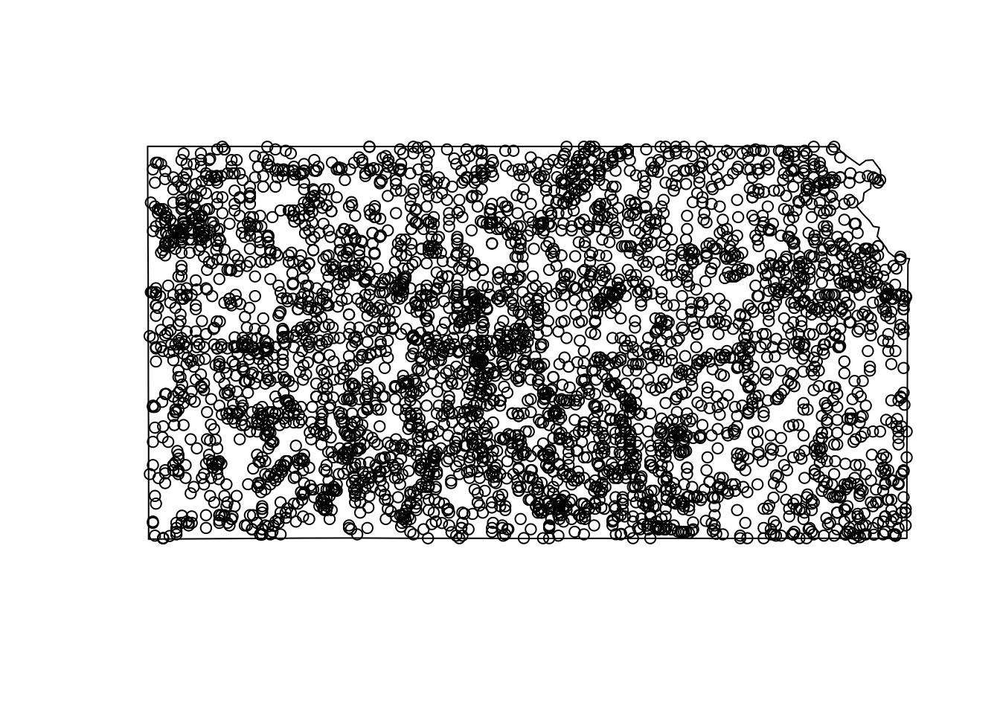
Suppose we want to determine the distance between the geographic center of the state and the centroid of all the tornadoes?
We start by computing the centroids for the state polygon and for the combined set of all Kansas tornadoes.
## Warning in st_centroid.sf(KS): st_centroid assumes attributes are constant over
## geometries of xFinally we make a map and then compute the distance in meters using the st_distance() function.
plot(KS$geometry)
plot(KSgeocenter$geometry, add = TRUE, col = "blue")
plot(KStorcenter, add = TRUE, col = "red")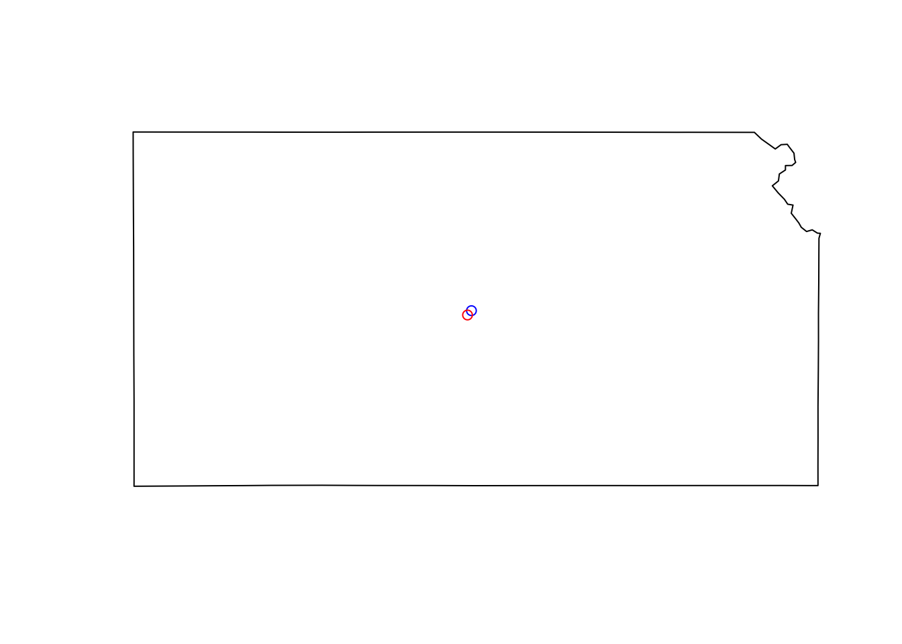
## Units: [m]
## [,1]
## [1,] 7062.5543.6 Working with Rasters
Recall that the vector data model represents the world using points, lines and polygons and we use classes from the sp and sf packages to work with vector data. The raster data model divides geographic space into a grid of cells of constant size (resolution) and we use classes from the raster package to work with raster data.
A raster in R is a data structure that divides space into rectangles called ‘cells’ (or ‘pixels’). Each cell has an attribute value.
The raster package has functions for creating, reading, manipulating, and writing raster data as S4 objects and functions for raster manipulation common in GIS.
##
## Attaching package: 'raster'## The following object is masked from 'package:dplyr':
##
## select## The following object is masked from 'package:tidyr':
##
## extractAn S4 RasterLayer object (raster) is one variable (called a ‘layer’ or a ‘band’). The object includes the number of columns and rows, the coordinates of its spatial extent (bounding box), and the coordinate reference system (CRS).
A raster can also store information about the external file from where it came.
The package has two classes for data with more than one variable associated with each cell (multi-layer data) the RasterStack and the RasterBrick. A RasterBrick can only be linked to a single (multi-layer) file. A RasterStack can be formed from separate files. Otherwise they are the same.
3.6.1 Creating raster objects
The raster() function creates a raster with a geographic (longitude/latitude) CRS and a 1 by 1 degree grid of cells across the globe.
## class : RasterLayer
## dimensions : 180, 360, 64800 (nrow, ncol, ncell)
## resolution : 1, 1 (x, y)
## extent : -180, 180, -90, 90 (xmin, xmax, ymin, ymax)
## crs : +proj=longlat +datum=WGS84 +ellps=WGS84 +towgs84=0,0,0Arguments including xmin, nrow, ncol, and crs are used to change these default settings. The CRS is written as a proj4string.
The default raster layer is in geographic coordinates spanning the globe at one-degree resolution in the north-south and the east-west directions.
We know the raster object is an S4 class because it has slots (e.g., @data).
## Formal class 'RasterLayer' [package "raster"] with 12 slots
## ..@ file :Formal class '.RasterFile' [package "raster"] with 13 slots
## .. .. ..@ name : chr ""
## .. .. ..@ datanotation: chr "FLT4S"
## .. .. ..@ byteorder : chr "little"
## .. .. ..@ nodatavalue : num -Inf
## .. .. ..@ NAchanged : logi FALSE
## .. .. ..@ nbands : int 1
## .. .. ..@ bandorder : chr "BIL"
## .. .. ..@ offset : int 0
## .. .. ..@ toptobottom : logi TRUE
## .. .. ..@ blockrows : int 0
## .. .. ..@ blockcols : int 0
## .. .. ..@ driver : chr ""
## .. .. ..@ open : logi FALSE
## ..@ data :Formal class '.SingleLayerData' [package "raster"] with 13 slots
## .. .. ..@ values : logi(0)
## .. .. ..@ offset : num 0
## .. .. ..@ gain : num 1
## .. .. ..@ inmemory : logi FALSE
## .. .. ..@ fromdisk : logi FALSE
## .. .. ..@ isfactor : logi FALSE
## .. .. ..@ attributes: list()
## .. .. ..@ haveminmax: logi FALSE
## .. .. ..@ min : num Inf
## .. .. ..@ max : num -Inf
## .. .. ..@ band : int 1
## .. .. ..@ unit : chr ""
## .. .. ..@ names : chr ""
## ..@ legend :Formal class '.RasterLegend' [package "raster"] with 5 slots
## .. .. ..@ type : chr(0)
## .. .. ..@ values : logi(0)
## .. .. ..@ color : logi(0)
## .. .. ..@ names : logi(0)
## .. .. ..@ colortable: logi(0)
## ..@ title : chr(0)
## ..@ extent :Formal class 'Extent' [package "raster"] with 4 slots
## .. .. ..@ xmin: num -180
## .. .. ..@ xmax: num 180
## .. .. ..@ ymin: num -90
## .. .. ..@ ymax: num 90
## ..@ rotated : logi FALSE
## ..@ rotation:Formal class '.Rotation' [package "raster"] with 2 slots
## .. .. ..@ geotrans: num(0)
## .. .. ..@ transfun:function ()
## ..@ ncols : int 360
## ..@ nrows : int 180
## ..@ crs :Formal class 'CRS' [package "sp"] with 1 slot
## .. .. ..@ projargs: chr "+proj=longlat +datum=WGS84 +ellps=WGS84 +towgs84=0,0,0"
## ..@ history : list()
## ..@ z : list()The slot names are retrieved with
## [1] "file" "data" "legend" "title" "extent" "rotated"
## [7] "rotation" "ncols" "nrows" "crs" "history" "z"To create an alternative raster with 36 longitudes -100 and 0 degrees East longitude and 18 latitudes between the equator and 50 degrees N latitude we specify the number of columns, the number of rows and the extent as follows.
## class : RasterLayer
## dimensions : 18, 36, 648 (nrow, ncol, ncell)
## resolution : 2.777778, 2.777778 (x, y)
## extent : -100, 0, 0, 50 (xmin, xmax, ymin, ymax)
## crs : +proj=longlat +datum=WGS84 +ellps=WGS84 +towgs84=0,0,0## [1] 2.777778 2.777778This results in raster with cell resolution of 2.7 degrees of longitude and 2.7 degrees of latitude.
The parameters can be changed after the raster is created. Here we change the resolution to exactly 3 degrees. This changes the number of rows and columns.
## [1] 33## [1] 17Here we change the number of columns to 18. This changes the resolution to 5.5 degrees in the east-west direction but keeps the resolution at 3 degrees in the north-south direction.
## [1] 5.5 3.0The raster object r is a template with no values in the cells. By default it will have an extent that spans the globe.
## [1] 100## [1] FALSEHere there are 100 cells in a 10 by 10 empty raster. We use the values() function to place values in the cells. The function is specified on the left-hand side of the assignment operator. First we assign to a vector of length ncell(r) random numbers from a uniform distribution with the runif() function. The default is that the random numbers are between 0 and 1.
## [1] 0.6760344 0.8791907 0.7589404 0.1710177 0.5184367 0.6011584## 1 2 3 4 5 6 7
## 1 0.67603436 0.8791907 0.7589404 0.171017728 0.51843670 0.6011584 0.95576311
## 2 0.12131282 0.3757451 0.1725738 0.833633343 0.23788773 0.5174037 0.88990611
## 3 0.14461217 0.9017774 0.8285979 0.321408121 0.74631613 0.3123553 0.25809347
## 4 0.62179442 0.1239171 0.3411119 0.004537917 0.50143227 0.8185247 0.01779656
## 5 0.85678235 0.6455332 0.4658732 0.916013978 0.87751075 0.8675222 0.37854454
## 6 0.71153439 0.6430360 0.3154673 0.102036400 0.20458383 0.8954627 0.85357905
## 7 0.09077537 0.1062902 0.4694711 0.927161670 0.95896371 0.2755370 0.23134015
## 8 0.46228577 0.6092207 0.2025476 0.975101148 0.04961742 0.4866812 0.03747906
## 9 0.54903333 0.4507182 0.4398499 0.296908885 0.77547379 0.8566912 0.24276549
## 10 0.77201013 0.7660281 0.3746228 0.580862483 0.45489682 0.1813805 0.94200763
## 8 9 10
## 1 0.61387469 0.3873558 0.7363020
## 2 0.08805707 0.2255451 0.3623937
## 3 0.91263102 0.8016960 0.2788676
## 4 0.90515451 0.4313071 0.1561031
## 5 0.25013341 0.3402057 0.7030463
## 6 0.41475308 0.6409912 0.2888666
## 7 0.19825852 0.8407078 0.1246083
## 8 0.08147994 0.8127691 0.5877135
## 9 0.50356013 0.4108382 0.5585083
## 10 0.98499242 0.1196839 0.4624998The cells are arranged in lexicographical order (upper left to lower right) and the cells are populated with the values in the vector in this order.
The plot() method creates a choropleth map of the values in cells.
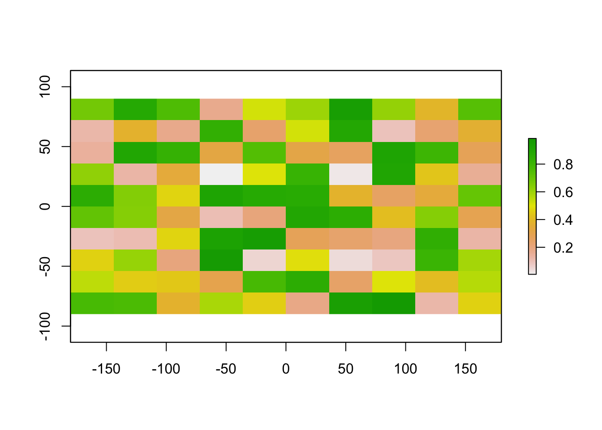
The default CRS is geographic.
## [1] "+proj=longlat +datum=WGS84 +ellps=WGS84 +towgs84=0,0,0"To project the raster use the function projectRaster(). Projections are performed using the PROJ4 protocol accessed through the rgdal package (same as with sf and sp objects).
We can also use the setValues() function to place values in the cells. Here we create a new raster layer with cell numbers as values using the setValues() function to place the numbers in the cells.
r <- raster(xmn = -110, xmx = -90,
ymn = 40, ymx = 60,
ncols = 10, nrows = 10)
r <- setValues(r, 1:ncell(r))
projection(r)## [1] "+proj=longlat +datum=WGS84 +ellps=WGS84 +towgs84=0,0,0"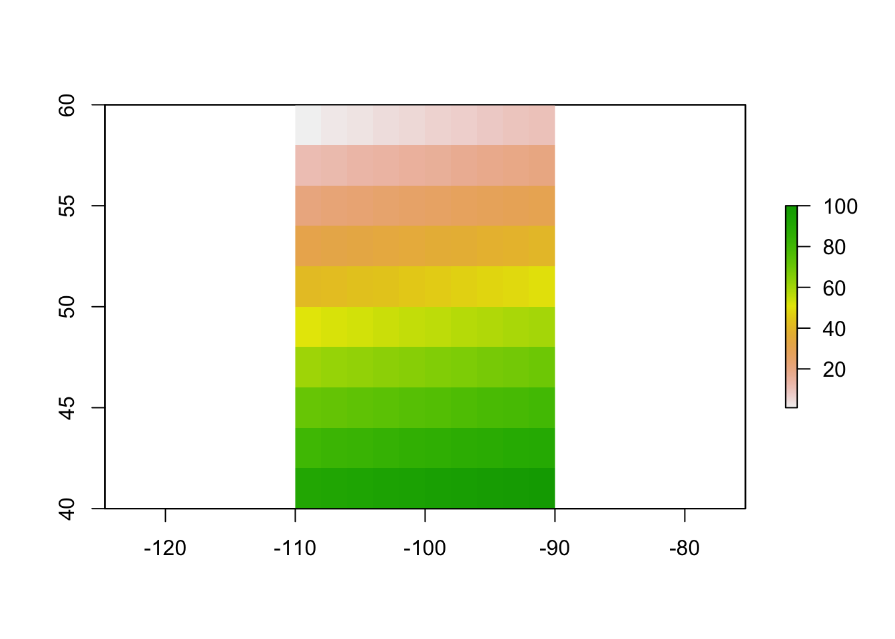
The numbers increase from top right to bottom left.
Next we create a projected raster.
rp <- projectRaster(r,
crs = "+proj=merc +a=6378137 +b=6378137 +lat_ts=0.0 +lon_0=0.0 +x_0=0.0 +y_0=0 +k=1.0 +units=m")
plot(rp)
The projection is performed using bi-linear interpolation (default). In the case where the values are categorical we use method = "ngb" for nearest neighbor.
3.6.2 From a data frame
The function rasterFromXYZ() is used to create a raster from a data frame where two of the columns are spatial coordinates listed in an array format.
For example, first create a data frame.
x <- seq(0, 10, length.out = 11)
y <- seq(-1, 1, length.out = 11)
df <- expand.grid(x = x, y = y)
head(df)## x y
## 1 0 -1
## 2 1 -1
## 3 2 -1
## 4 3 -1
## 5 4 -1
## 6 5 -1## x y v
## 1 0 -1.0 -2.020443923
## 2 1 -1.0 -0.240107081
## 3 2 -1.0 0.630381697
## 4 3 -1.0 0.388818268
## 5 4 -1.0 -0.435826423
## 6 5 -1.0 0.191041464
## 7 6 -1.0 -1.726788359
## 8 7 -1.0 0.192297647
## 9 8 -1.0 0.268970859
## 10 9 -1.0 0.312580794
## 11 10 -1.0 -0.318134613
## 12 0 -0.8 -0.141479565
## 13 1 -0.8 -0.936900930
## 14 2 -0.8 -0.474752894
## 15 3 -0.8 -1.077963035
## 16 4 -0.8 0.729076322
## 17 5 -0.8 0.887202988
## 18 6 -0.8 -0.380542538
## 19 7 -0.8 0.749130510
## 20 8 -0.8 -0.910529522
## 21 9 -0.8 0.583325596
## 22 10 -0.8 -2.370042552
## 23 0 -0.6 -0.874813635
## 24 1 -0.6 1.586765602
## 25 2 -0.6 0.205340264
## 26 3 -0.6 1.095638025
## 27 4 -0.6 -0.224363370
## 28 5 -0.6 -1.654547625
## 29 6 -0.6 -2.337070815
## 30 7 -0.6 -1.150525265
## 31 8 -0.6 -0.180303198
## 32 9 -0.6 0.748713620
## 33 10 -0.6 0.268571310
## 34 0 -0.4 0.162866827
## 35 1 -0.4 -1.418798642
## 36 2 -0.4 0.338457233
## 37 3 -0.4 -2.531301296
## 38 4 -0.4 1.017015225
## 39 5 -0.4 0.565070074
## 40 6 -0.4 -0.879231859
## 41 7 -0.4 1.352296484
## 42 8 -0.4 -0.402204153
## 43 9 -0.4 -2.140879105
## 44 10 -0.4 -0.829172466
## 45 0 -0.2 -0.214103991
## 46 1 -0.2 -1.008166755
## 47 2 -0.2 0.508366433
## 48 3 -0.2 1.163898253
## 49 4 -0.2 -0.865827021
## 50 5 -0.2 -0.685936161
## 51 6 -0.2 -0.539849992
## 52 7 -0.2 -0.869607614
## 53 8 -0.2 0.750786729
## 54 9 -0.2 1.096868105
## 55 10 -0.2 0.191561048
## 56 0 0.0 -2.704210122
## 57 1 0.0 -2.388130209
## 58 2 0.0 -0.250701658
## 59 3 0.0 -0.217145886
## 60 4 0.0 -0.807962904
## 61 5 0.0 0.763485901
## 62 6 0.0 -0.673262978
## 63 7 0.0 -0.172932445
## 64 8 0.0 1.603635935
## 65 9 0.0 0.708057749
## 66 10 0.0 -0.654053917
## 67 0 0.2 1.843071603
## 68 1 0.2 -0.142885563
## 69 2 0.2 -1.400759393
## 70 3 0.2 -0.540905296
## 71 4 0.2 1.945266476
## 72 5 0.2 -0.547176621
## 73 6 0.2 -1.669195607
## 74 7 0.2 -0.378417207
## 75 8 0.2 -0.484484636
## 76 9 0.2 -0.233188415
## 77 10 0.2 -1.167494466
## 78 0 0.4 -0.161733333
## 79 1 0.4 1.425145082
## 80 2 0.4 1.050766111
## 81 3 0.4 0.118813284
## 82 4 0.4 -0.166991197
## 83 5 0.4 0.264124882
## 84 6 0.4 -2.021553204
## 85 7 0.4 -0.702531647
## 86 8 0.4 0.176102897
## 87 9 0.4 1.296107158
## 88 10 0.4 0.422997702
## 89 0 0.6 0.748590097
## 90 1 0.6 -0.271042960
## 91 2 0.6 -1.704742394
## 92 3 0.6 0.157574397
## 93 4 0.6 0.157581135
## 94 5 0.6 0.009004968
## 95 6 0.6 -0.662073808
## 96 7 0.6 -0.423322333
## 97 8 0.6 0.261075358
## 98 9 0.6 -0.077465231
## 99 10 0.6 0.555293040
## 100 0 0.8 1.357007382
## 101 1 0.8 0.734738321
## 102 2 0.8 -1.452148778
## 103 3 0.8 1.667435318
## 104 4 0.8 -1.667268616
## 105 5 0.8 0.045841522
## 106 6 0.8 -0.690853412
## 107 7 0.8 0.546603971
## 108 8 0.8 -0.505630390
## 109 9 0.8 -0.766432497
## 110 10 0.8 0.772357518
## 111 0 1.0 0.240098478
## 112 1 1.0 -0.183275147
## 113 2 1.0 0.070042550
## 114 3 1.0 -0.892264907
## 115 4 1.0 -0.813011324
## 116 5 1.0 0.702632728
## 117 6 1.0 1.687883533
## 118 7 1.0 -0.068019841
## 119 8 1.0 -0.044428048
## 120 9 1.0 1.011590427
## 121 10 1.0 1.638051769The first two columns are the spatial locations in an array format and the third is an attribute.
Use the rasterFromXYZ() function to convert the data frame to a raster.
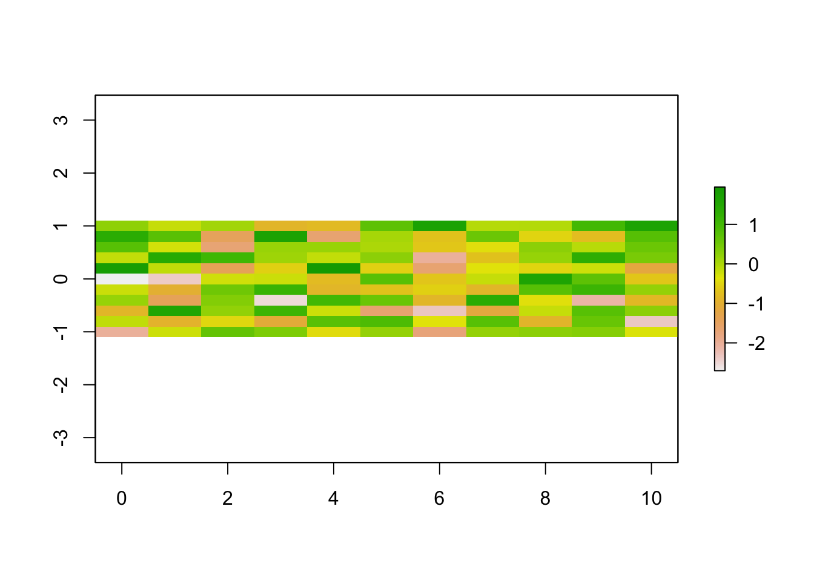
Note: this only works if the spatial coordinates are arranged in the format of an array.
3.6.3 Raster manipulations
The raster() function imports data with functions from the rgdal package. Supported formats include GeoTIFF, ESRI, ENVI, and ERDAS. Most formats that can import rasters can also be used to exporting rasters.
Consider the Meuse dataset (taken from the sp package), using a file in the native ‘raster- file’ format:
## [1] "/Library/Frameworks/R.framework/Versions/4.0/Resources/library/raster/external/test.grd"Do the cells contain values? Is the raster stored in memory? Create a plot.
## [1] TRUE## [1] FALSE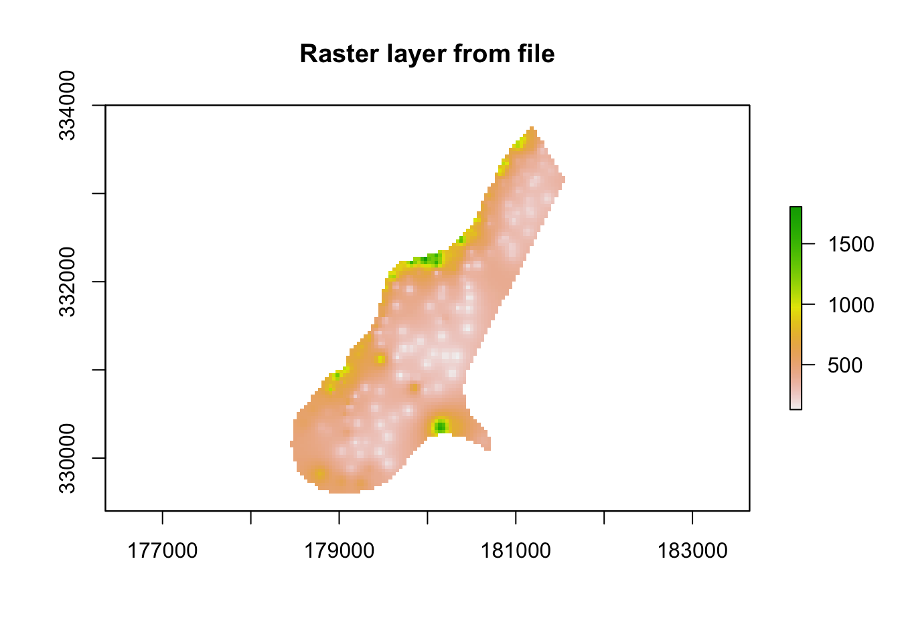
Note the raster layer is a rectangle of cells with values. Values that are coded as NA are not plotted.
## 1 2 3 4 5 6 7 8 9 10 11 12 13 14 15 16 17 18 19 20
## 1 NA NA NA NA NA NA NA NA NA NA NA NA NA NA NA NA NA NA NA NA
## 2 NA NA NA NA NA NA NA NA NA NA NA NA NA NA NA NA NA NA NA NA
## 3 NA NA NA NA NA NA NA NA NA NA NA NA NA NA NA NA NA NA NA NA
## 4 NA NA NA NA NA NA NA NA NA NA NA NA NA NA NA NA NA NA NA NA
## 5 NA NA NA NA NA NA NA NA NA NA NA NA NA NA NA NA NA NA NA NA
## 6 NA NA NA NA NA NA NA NA NA NA NA NA NA NA NA NA NA NA NA NA
## 7 NA NA NA NA NA NA NA NA NA NA NA NA NA NA NA NA NA NA NA NA
## 8 NA NA NA NA NA NA NA NA NA NA NA NA NA NA NA NA NA NA NA NA
## 9 NA NA NA NA NA NA NA NA NA NA NA NA NA NA NA NA NA NA NA NA
## 10 NA NA NA NA NA NA NA NA NA NA NA NA NA NA NA NA NA NA NA NAWe can combine raster layers into stacks and bricks. A stack (and a brick) is a collection of raster layers having the same spatial extent and resolution.
A brick is typically imported from a multi-layer (band) external file. They can also exist entirely in memory. A raster brick can only point to a single external file.
For example, create three rasters and assign random values to the cells.
r1 <- r2 <- r3 <- raster(nrow = 10, ncol = 10)
values(r1) <- runif(ncell(r1))
values(r2) <- runif(ncell(r2))
values(r3) <- runif(ncell(r3))Then combine the rasters into a stack with stack() (or into a brick with brick()).
## class : RasterStack
## dimensions : 10, 10, 100, 3 (nrow, ncol, ncell, nlayers)
## resolution : 36, 18 (x, y)
## extent : -180, 180, -90, 90 (xmin, xmax, ymin, ymax)
## crs : +proj=longlat +datum=WGS84 +ellps=WGS84 +towgs84=0,0,0
## names : layer.1, layer.2, layer.3
## min values : 0.007065830, 0.000681580, 0.005370395
## max values : 0.9983388, 0.9991697, 0.9926319## [1] 3
So each attribute in a raster stack (or brick) is a layer.
Here we import a raster brick from a file.
## class : RasterBrick
## dimensions : 77, 101, 7777, 3 (nrow, ncol, ncell, nlayers)
## resolution : 1, 1 (x, y)
## extent : 0, 101, 0, 77 (xmin, xmax, ymin, ymax)
## crs : +proj=merc +datum=WGS84 +ellps=WGS84 +towgs84=0,0,0
## source : /Library/Frameworks/R.framework/Versions/4.0/Resources/library/raster/external/rlogo.grd
## names : red, green, blue
## min values : 0, 0, 0
## max values : 255, 255, 255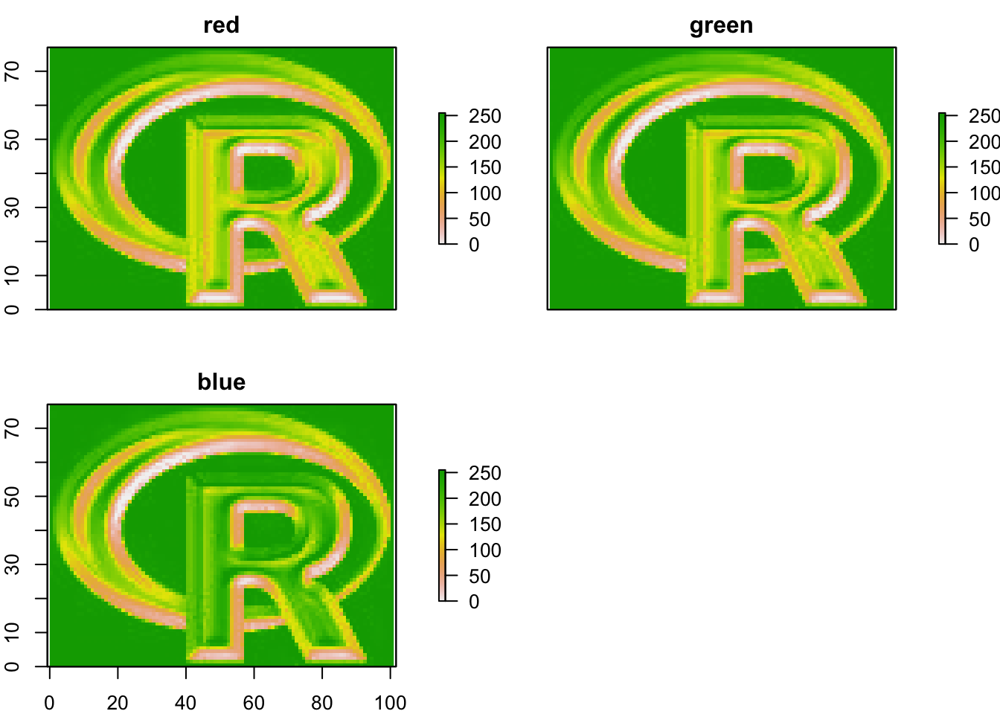
Suppose we only want a single layer (e.g., one attribute). We extract a raster layer from a brick or stack with the layer = or band = arguments.

3.6.4 Raster algebra
Most base R functions (+, *, round(), ceiling(), log(), etc) work on raster objects. Operations are done on all cells at once.
Here we place the numbers from 1 to 100 sequentially in the cells, then add 100 to these values and take the square root.

Here we replace the cell values with random uniform numbers between 0 and 1. Then round to the nearest integer and add one.
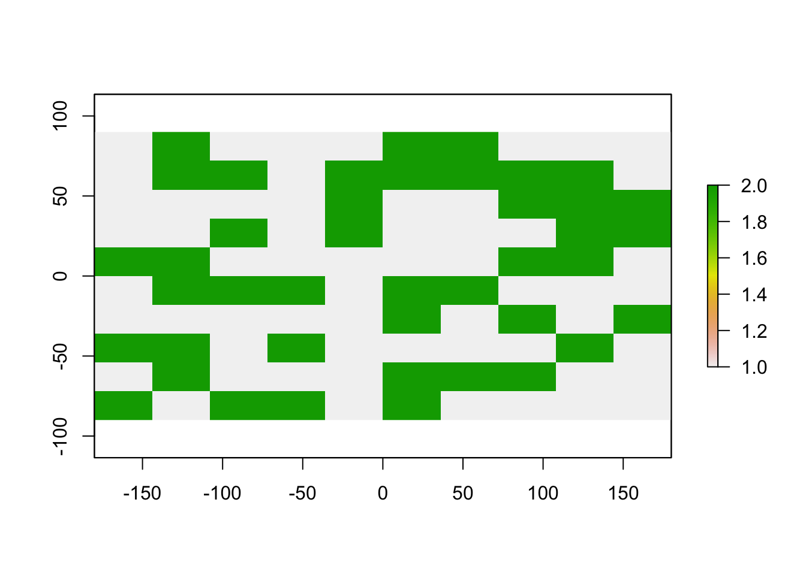
Replace only certain values with the subset function [].
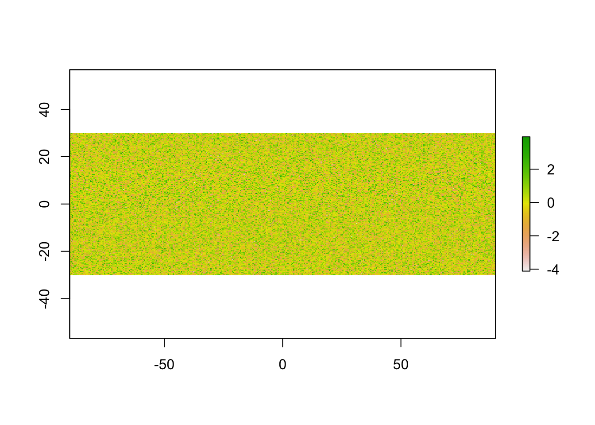
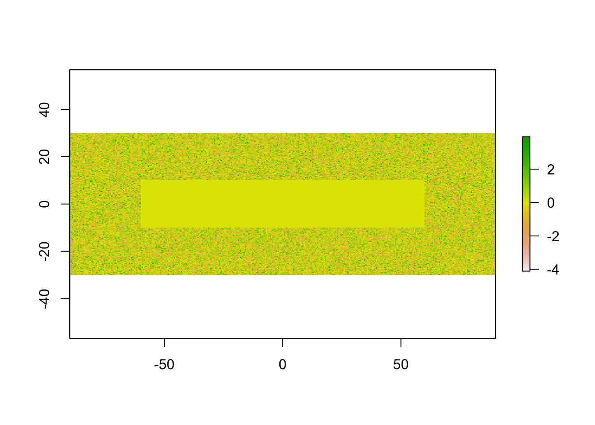
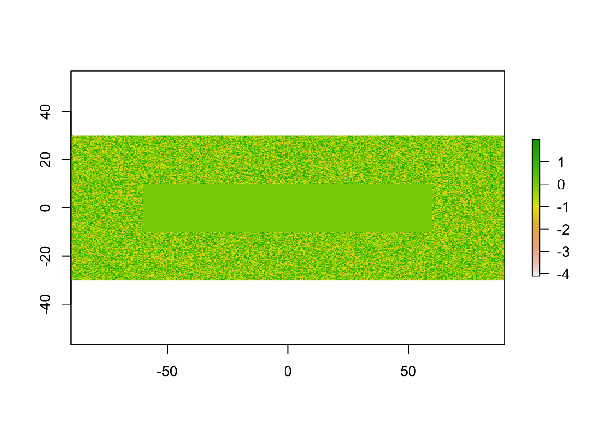
Raster objects with the same resolution and origin can be combined.
Summary functions (min, max, mean, etc) return a raster object. They are useful when we have more than one raster.
Here we create four rasters each with a different set of values from a random normal distribution. We then create a raster containing the average value by cell in rasters one through four. We also create a raster containing the sum of the values by cell in rasters one and two.
r <- raster(ncol = 5, nrow = 5)
r1 <- setValues(r, rnorm(ncell(r)))
r2 <- setValues(r, rnorm(ncell(r)))
r3 <- setValues(r, rnorm(ncell(r)))
r4 <- setValues(r, rnorm(ncell(r)))
a <- mean(r1, r2, r3, r4)
plot(a)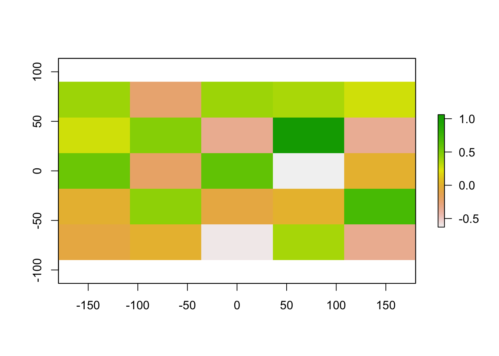
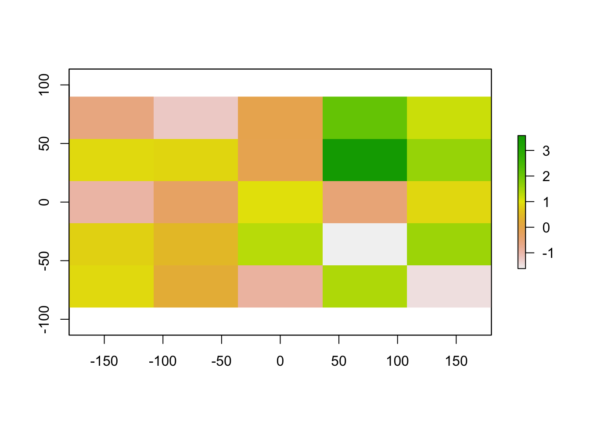
To get summary statistics across all values within a particular raster we use the cellStats() function.
## [1] 0.3493077## [1] 10.864653.6.5 Example: Aggregate tornado genesis locations to a raster layer and then compute local clustering
(Re)import the tornado data shapefile as a simple feature data frame with the genesis location as a point geometry. Filter to remove tornadoes occurring in Hawaii, Alaska, and Puerto Rico.
Alltors <- st_read(dsn = "1950-2018-torn-initpoint") %>%
dplyr::filter(!st %in% c("HI", "AK", "PR"))## Reading layer `1950-2018-torn-initpoint' from data source `/Users/jelsner/Desktop/Projects/ASSFG-Book/1950-2018-torn-initpoint' using driver `ESRI Shapefile'
## Simple feature collection with 63645 features and 22 fields
## geometry type: POINT
## dimension: XY
## bbox: xmin: -163.53 ymin: 18.13 xmax: -64.9 ymax: 61.02
## CRS: 4326Note: here I use the syntax dplyr::filter() since the dplyr filter() function is masked by the same named function in the raster package.
Create a raster of grid cells across the bounding box. First determining the spatial domain of the set of all tornadoes.
## xmin ymin xmax ymax
## -124.468 24.550 -67.200 49.330Next set the raster domain slightly larger than the bounding box and assign a resolution of one degree in longitude and one degree in latitude. Check the extent of the raster with the extent() function.
## class : Extent
## xmin : -125
## xmax : -67
## ymin : 24
## ymax : 50Use the rasterize() function to count the number of times each raster cell contains a tornado genesis location. The first argument is the spatial data frame (dough; here a simple feature data frame) and the second is the raster without values (cooking cutter). The argument field = specifies a column name in the spatial data frame (here just an identifier) and the argument fun = specifies what to do (here simply count the unique instances of the field in each cell).
## [1] "RasterLayer"
## attr(,"package")
## [1] "raster"## [1] 26 58 1The result is a raster layer. The number of tornadoes occurring in each cell are the values.
## [1] NA NA NA NA NA NA NA NA NA NA NA NA NA NA NA NA NA NA
## [19] NA NA NA NA 2 1 NA NA NA NA NA 1 1 NA NA NA NA NA
## [37] NA NA NA NA NA NA NA NA NA NA NA NA NA NA NA NA NA NA
## [55] NA NA NA NA NA NA 5 NA NA 3 6 3 4 NA 2 NA 4 8
## [73] 8 7 4 9 25 23 17 30 55 76 37 80 83 120 66 29 14 7
## [91] 3 2 NA NA NA NA NA NA NA NA NA NA NA NA NA NA NA NA
## [109] NA NA NA NA NA NA NA NA NA NA 16 2 2 5 11 16 2 1
## [127] 5 1 2 17 18 22 7 10 11 11 22 20 43 59 66 64 99 146
## [145] 105 71 39 14 16 10 2 NA 2 NA NA NA NA NA NA NA NA NA
## [163] NA NA NA NA NA NA NA NA NA NA 8 NA 1 6 12 NA 8 6
## [181] 6 3 9 1 4 1 7 4 10 12 10 5 11 7 25 33 46 67
## [199] 76 52Raster cells without tornadoes are given a value of NA the integers are the number of times the cell contained a tornado.
We make a quick map with the plot() method.
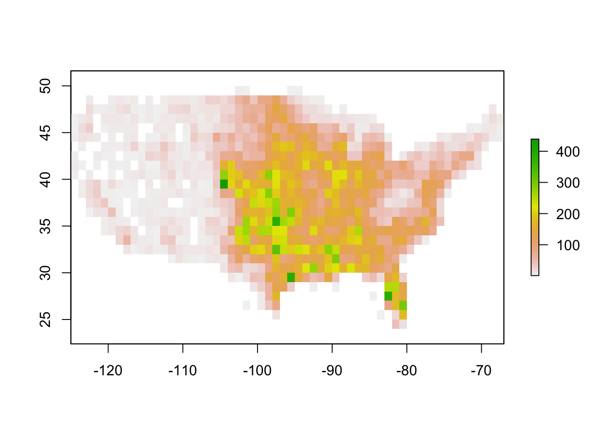
It looks right. Some cells across the Plains and the South have quite a few tornadoes others not as many.
A spatial statistic indicating how similar values in neighboring cells tend to be is Moran’s I. It is implemented on rasters with the Moran() function.
First we convert the NA values to zero since they do not really represent missing information but rather no tornadoes. We do this by including a background = argument specifying a value of 0.
## [1] 0.8241374Moran’s I is a global measure of clustering (high values near high values and low values near low values). Values range from -1 to +1 where positive values indicate clustering and negative values indicate regularity (e.g., chessboard).
The estimate of .82 indicates a high level of tornado clustering at this scale. Under the null hypothesis of no spatial autocorrelation the expected value for Moran’s I is close to zero [-1/(n-1), where n is the number of cells].
With raster data the neighborhood definition is constant across the study region.
Clusters at a local level can be found using a local indicator of spatial autocorrelation. One such indicator is local Moran’s I, which is computed at each cell (using the MoranLocal() function) so the result is a raster.
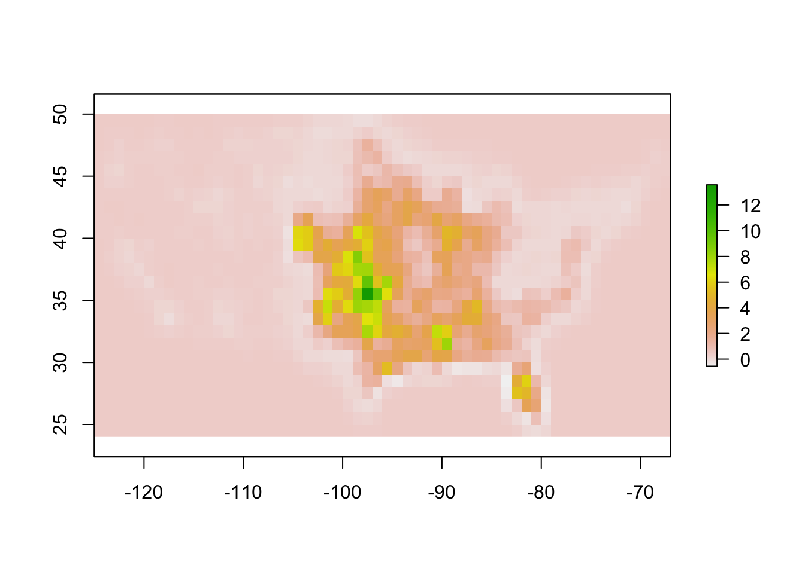
Here we can more clearly delineate the hot spots of tornadoes over the south-central Plains.
3.6.6 Problem Set #2
What tornado (by date and EF rating [
mag]) in the historical record has a genesis location closest to the geographic center of Wisconsin? Hint: Use thewhich.min()function on the vector of distances to identify the row number in the tornado data frame (50).Determine Moran’s I and plot local Moran’s I for the occurrence of tornadoes across Kansas aggregated to a .2 degree latitude/longitude raster bounded by -102.1 and -94.5 degrees east longitude and 36.9 to 40.1 degrees north latitude (50).
3.6.7 Geocomputation functions on rasters
The crop() function takes a geographic subset of a larger raster object. A raster is cropped by providing an extent object or other spatial object from which an extent can be extracted (objects from classes deriving from raster and from spatial in the sp package).
The function drawExtent() is used to visually see the new extent (bounding box) that is given to the crop() function.
The trim() function crops a raster layer by removing the outer rows and columns that only contain NA values. The extend() function adds new rows and/or columns with NA values.
The extract() function retrieves values from a raster object at the locations of other spatial data.
The merge() function combines two or more objects into a single object. The input objects must have the same resolution and origin (such that their cells fit into a single larger raster). If this is not the case, first adjust one of the objects with the functions aggregate() or resample().
The aggregate() and disaggregate() functions change the resolution (cell size) of a raster object.
Here we crop the raster into two pieces and then merge them into one with the merge() function. The function has an argument that allows us to export to test.grd.
r1 <- crop(r, extent(-180, 0, 0, 30))
r2 <- crop(r, extent(-10, 180, -20, 10))
m <- merge(r1, r2,
filename = 'test.grd',
overwrite = TRUE)
plot(m)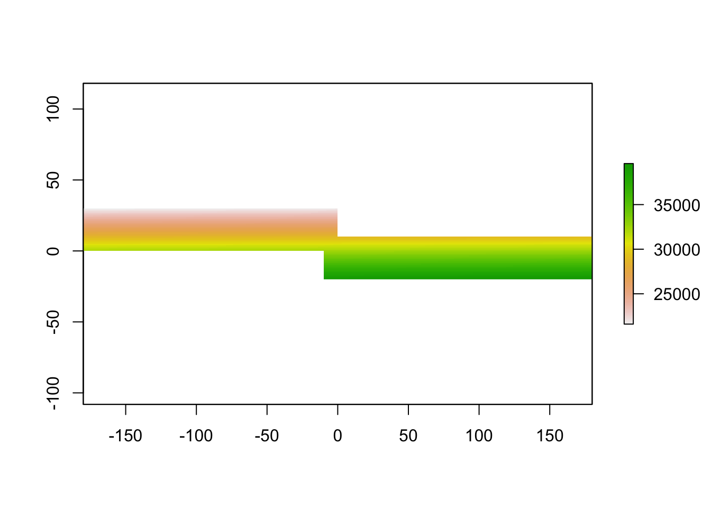
Other formats for saving the raster (e.g., geoTIFF) are available (see writeRaster() for more options).
The flip() function flips the data (reverse order) in the horizontal or vertical direction—typically to correct for a ‘communication problem’ between different R packages or a misinterpreted file. The rotate() function rotates longitude/latitude rasters that have longitudes from 0 to 360 degrees (often used by climatologists) to the standard -180 to 180 degrees system. With the t() function you can rotate a raster object 90 degrees.
3.6.8 Vector to raster conversion
Point-to-raster conversion is often done to analyze point-pattern data. For example to count the number of distinct species (represented by point observations) that occur in each raster cell. The rasterize() function takes a raster object to set the spatial extent and resolution, and a function to determine how to summarize the points (or an attribute of each point) by cell.
Polygon to raster conversion is typically done to create a RasterLayer that can act as a mask, i.e. to set to NA a set of cells of a raster object, or to summarize values on a raster by zone. For example a country polygon is transferred to a raster that is then used to set all the cells outside that country to NA; whereas polygons representing administrative regions such as states can be transferred to a raster to summarize raster values by region.
It is also possible to convert the values of a raster layer to points or polygons, using rasterToPoints() and rasterToPolygons(). These functions return values only for cells that are not missing (NA).
3.6.9 Focal (neighborhood) functions
The functions: focal(), focalFilter(), focalNA() compute statistics in a neighborhood of cells around a focal cell, putting the result in the focal cell of an output raster.
With focal(), the neighborhood can only be a rectangle. With focalFilter(), the neighborhood is a user-defined a matrix of weights and could approximate any shape by giving some cells zero weight. The focalNA() function only computes new values for cells that are NA in the input raster.
The distance() function computes the shortest distance to cells that are not NA. The pointDistance() function computes the shortest distance to any point in a set of points.
The gridDistance() function computes the distance when following grid cells that can be traversed (e.g. excluding water bodies). The direction() function computes the direction towards (or from) the nearest cell that is not NA. The adjacency() function determines which cells are adjacent to other cells, and the pointDistance() function computes distance between points.
3.6.10 Summary functions
The function cellStats() computes summary statistics on a raster. For example:
## [1] 42.15782## [1] 439## value count
## [1,] 0 642
## [2,] 1 48
## [3,] 2 41
## [4,] 3 30
## [5,] 4 28
## [6,] 5 25
## [7,] 6 19
## [8,] 7 20
## [9,] 8 15
## [10,] 9 14
## [11,] 10 17
## [12,] 11 12
## [13,] 12 9
## [14,] 13 8
## [15,] 14 8
## [16,] 15 8
## [17,] 16 9
## [18,] 17 8
## [19,] 18 8
## [20,] 19 5
## [21,] 20 6
## [22,] 21 6
## [23,] 22 5
## [24,] 23 7
## [25,] 24 1
## [26,] 25 3
## [27,] 26 1
## [28,] 27 4
## [29,] 28 3
## [30,] 29 7
## [31,] 30 8
## [32,] 31 5
## [33,] 32 6
## [34,] 33 5
## [35,] 34 5
## [36,] 35 5
## [37,] 36 4
## [38,] 37 2
## [39,] 38 3
## [40,] 39 7
## [41,] 40 5
## [42,] 41 4
## [43,] 42 2
## [44,] 43 5
## [45,] 44 3
## [46,] 45 2
## [47,] 46 3
## [48,] 47 1
## [49,] 48 3
## [50,] 49 1
## [51,] 50 2
## [52,] 51 2
## [53,] 52 3
## [54,] 53 1
## [55,] 54 2
## [56,] 55 3
## [57,] 56 2
## [58,] 57 3
## [59,] 59 4
## [60,] 60 2
## [61,] 61 3
## [62,] 62 4
## [63,] 64 1
## [64,] 65 1
## [65,] 66 3
## [66,] 67 3
## [67,] 68 1
## [68,] 69 1
## [69,] 70 1
## [70,] 71 7
## [71,] 72 5
## [72,] 73 2
## [73,] 74 2
## [74,] 75 1
## [75,] 76 7
## [76,] 77 2
## [77,] 78 1
## [78,] 79 1
## [79,] 80 8
## [80,] 82 2
## [81,] 83 1
## [82,] 84 2
## [83,] 85 3
## [84,] 86 4
## [85,] 87 4
## [86,] 88 3
## [87,] 89 2
## [88,] 90 2
## [89,] 91 1
## [90,] 92 2
## [91,] 93 1
## [92,] 95 2
## [93,] 96 1
## [94,] 97 5
## [95,] 98 2
## [96,] 99 3
## [97,] 100 1
## [98,] 102 6
## [99,] 103 4
## [100,] 104 4
## [101,] 105 6
## [102,] 106 4
## [103,] 107 1
## [104,] 108 3
## [105,] 109 1
## [106,] 110 2
## [107,] 111 2
## [108,] 112 2
## [109,] 113 3
## [110,] 114 3
## [111,] 115 4
## [112,] 116 2
## [113,] 117 2
## [114,] 118 3
## [115,] 119 3
## [116,] 120 8
## [117,] 121 1
## [118,] 122 3
## [119,] 123 1
## [120,] 124 2
## [121,] 125 3
## [122,] 126 4
## [123,] 127 1
## [124,] 128 1
## [125,] 129 3
## [126,] 130 2
## [127,] 131 1
## [128,] 133 2
## [129,] 134 6
## [130,] 135 2
## [131,] 136 1
## [132,] 137 4
## [133,] 138 1
## [134,] 139 2
## [135,] 140 7
## [136,] 141 4
## [137,] 142 4
## [138,] 143 7
## [139,] 144 3
## [140,] 145 2
## [141,] 146 1
## [142,] 148 3
## [143,] 149 1
## [144,] 150 4
## [145,] 151 2
## [146,] 152 3
## [147,] 153 3
## [148,] 154 4
## [149,] 155 2
## [150,] 156 1
## [151,] 157 3
## [152,] 160 4
## [153,] 161 3
## [154,] 162 5
## [155,] 163 2
## [156,] 165 4
## [157,] 167 4
## [158,] 168 1
## [159,] 169 4
## [160,] 170 3
## [161,] 171 5
## [162,] 172 3
## [163,] 174 3
## [164,] 175 1
## [165,] 176 1
## [166,] 177 3
## [167,] 178 5
## [168,] 179 4
## [169,] 183 1
## [170,] 186 2
## [171,] 187 1
## [172,] 188 5
## [173,] 189 3
## [174,] 190 1
## [175,] 193 2
## [176,] 195 1
## [177,] 196 1
## [178,] 200 2
## [179,] 201 4
## [180,] 204 1
## [181,] 205 1
## [182,] 208 2
## [183,] 210 2
## [184,] 211 1
## [185,] 212 5
## [186,] 215 1
## [187,] 216 2
## [188,] 217 1
## [189,] 218 1
## [190,] 220 1
## [191,] 221 1
## [192,] 223 1
## [193,] 224 2
## [194,] 225 1
## [195,] 231 1
## [196,] 232 2
## [197,] 236 1
## [198,] 237 1
## [199,] 239 2
## [200,] 240 2
## [201,] 241 1
## [202,] 243 1
## [203,] 246 1
## [204,] 250 1
## [205,] 251 1
## [206,] 252 1
## [207,] 255 1
## [208,] 257 1
## [209,] 261 1
## [210,] 264 1
## [211,] 265 2
## [212,] 270 1
## [213,] 271 1
## [214,] 277 1
## [215,] 278 2
## [216,] 282 1
## [217,] 288 1
## [218,] 293 1
## [219,] 300 1
## [220,] 324 1
## [221,] 381 1
## [222,] 384 1
## [223,] 386 1
## [224,] 439 1Use zonal() to summarize a raster object using zones (areas with the same integer number) defined in a RasterLayer and crosstab() to cross-tabulate two RasterLayer objects.